<!doctype html>
<html lang="en">
<head>
  <meta charset="utf-8">
  <meta name="viewport" content="width=device-width, initial-scale=1">
  <title>arxiv digest — 2026-10-09</title>
  <style>
:root {
  --bg: #ffffff;
  --fg: #1f2328;
  --muted: #59636e;
  --border: #d0d7de;
  --card: #f6f8fa;
  --link: #0969da;
}
body {
  max-width: 980px;
  margin: 0 auto;
  padding: 2rem 1rem 5rem;
  font-family: -apple-system, BlinkMacSystemFont, "Segoe UI", Helvetica, Arial, sans-serif;
  line-height: 1.55;
  color: var(--fg);
  background: var(--bg);
}
a { color: var(--link); }
img { max-width: 100%; height: auto; }
pre, code { background: var(--card); border-radius: 6px; }
pre { padding: 1rem; overflow-x: auto; }
blockquote { border-left: 4px solid var(--border); padding-left: 1rem; color: var(--muted); }
details { margin: 0.6rem 0; }
summary { cursor: pointer; font-weight: 600; }
.paper-figures-scroll {
  display: flex;
  gap: 1rem;
  overflow-x: auto;
  overscroll-behavior-x: contain;
  padding: 0.75rem 0.25rem 1rem;
  margin: 1rem 0 1.25rem;
  border-top: 1px solid var(--border);
  border-bottom: 1px solid var(--border);
  scroll-snap-type: x proximity;
}
.paper-figure-card {
  flex: 0 0 min(260px, 72vw);
  scroll-snap-align: start;
  background: var(--card);
  border: 1px solid var(--border);
  border-radius: 12px;
  padding: 0.55rem;
}
.paper-figure-card img {
  display: block;
  width: 100%;
  max-height: 240px;
  object-fit: contain;
  background: white;
  border-radius: 8px;
}
.paper-figure-caption {
  display: block;
  margin-top: 0.5rem;
  color: var(--muted);
  font-size: 0.85rem;
}
.figure-strip-hint {
  color: var(--muted);
  font-size: 0.9rem;
  margin-bottom: -0.3rem;
}
</style>
  <!-- MathJax: renders $...$ inline math and $$...$$ display math, plus
       \(...\) and \[...\]. Loaded from the official CDN; works offline
       once cached. Configured to skip code/pre blocks so arxiv IDs that
       look like dollar amounts don't get mangled. -->
  <script>
    window.MathJax = {
      tex: {
        inlineMath: [['$', '$'], ['\\(', '\\)']],
        displayMath: [['$$', '$$'], ['\\[', '\\]']],
        processEscapes: true,
        processEnvironments: true
      },
      options: {
        skipHtmlTags: ['script', 'noscript', 'style', 'textarea', 'pre', 'code'],
        ignoreHtmlClass: 'tex2jax_ignore',
        processHtmlClass: 'tex2jax_process'
      }
    };
  </script>
  <script id="MathJax-script" async
    src="https://cdn.jsdelivr.net/npm/mathjax@3/es5/tex-chtml.js"></script>
</head>
<body>
<header style="background-color: #333; color: white; padding: 15px; margin-bottom: 20px;">
  <h1 style="margin: 0; font-size: 24px;">
    <a href="https://ochelpan.github.io/arXiv_clean/" style="color: white; text-decoration: none;">Main</a>
  </h1>
</header>

<h1>Daily arXiv Report</h1>

<hr>
<p>
<a href="index.html">← Index</a>
 · <a href="papers_04.html">← Previous</a> · <a href="papers_06.html">Next →</a>
</p>
<hr>

<h2>Papers 81–100</h2>
<p><a id="paper-2610.10521"></a></p>
<h3 id="trend-formation-with-sparse-global-sampling"><a href="http://arxiv.org/abs/2610.10521v1">Trend formation with sparse global sampling</a></h3>
<p><strong>Authors:</strong> Sarath Sankar, Abhijit Sinha, Shankar Ghosh, Vikram Tripathi, Amitava Bhattacharya<br>
<strong>Type:</strong> both · <strong>Category:</strong> statistical mechanics · <strong>PDF:</strong> <a href="https://arxiv.org/pdf/2610.10521v1">https://arxiv.org/pdf/2610.10521v1</a><br>
<strong>Analysis basis:</strong> full PDF text, analyzed in chunks
<strong>Topic relevance:</strong> <code>driven-dissipative phase transition</code> <strong>1/5</strong> · <code>non-equilibrium universality</code> <strong>1/5</strong></p>
<div class="figure-strip-hint">↔ Scroll figures horizontally</div>
<div class="paper-figures-scroll">
<figure class="paper-figure-card">
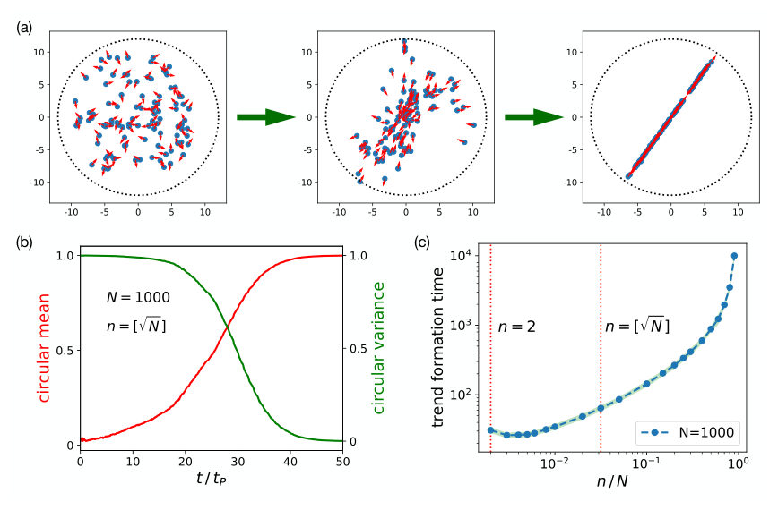
<figcaption class="paper-figure-caption"><b>Fig 1.</b> Figure 1: (a) Snapshots of a representative simulation showing the evolution from an initially disordered configuration to a fully aligned state. Arrows indicate particle velocity directions. (b) Time evolution of the circular mean (red) and circular variance (green). Here time is shown in units of the ideal passage time, tP . (c) Average trend formation time (in units of tP ) as a function of the sample size fraction n/N, with shaded region indicating standard deviation over realizations.</figcaption>
</figure>
<figure class="paper-figure-card">
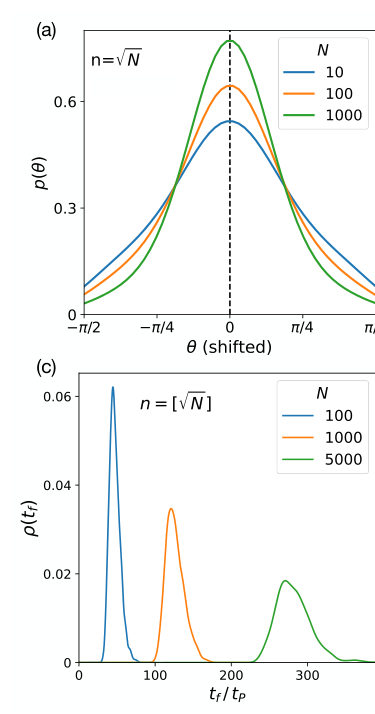
<figcaption class="paper-figure-caption"><b>Fig 2.</b> Figure 2: Contrasting trend formation properties between sampling sizes n = [ √</figcaption>
</figure>
<figure class="paper-figure-card">
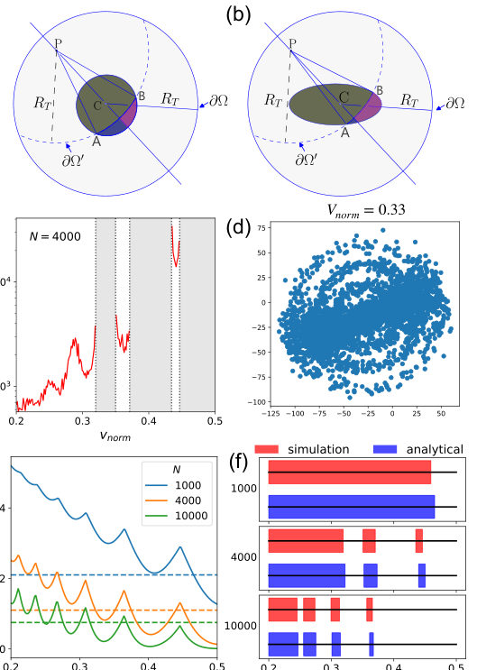
<figcaption class="paper-figure-caption"><b>Fig 3.</b> Figure 3: Geometric filtering mechanism and dynamical criterion for trend formation. Agent P, at distance d from the true centroid C, infers an estimated centroid through noisy sam- pling, resulting in a perceived centroid distribution (gray shaded region). Trajectory reversal occurs only when the sampled centroid lies outside ∂Ω′. (a) For an isotropic particle distribution, the noise cloud is circular and no directional bias arises. (b) A weak nematic asymmetry, either coming from initial configuration or dynamically generated, deforms the noise cloud into an ellipse whose major axis tracks the nematic alignment direction. Sampling from the pink region returns P toward the nematic line;...</figcaption>
</figure>
<figure class="paper-figure-card">
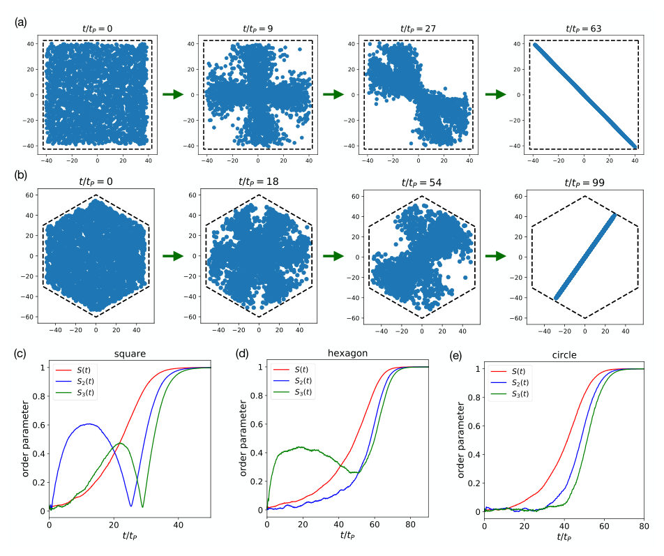
<figcaption class="paper-figure-caption"><b>Fig 4.</b> Figure 4: Snapshots of evolution under square and hexagon geometry constraints (the considered polygon orientations are shown with dashed boundaries) are respectively shown in (a) and (b). Here n = [ √</figcaption>
</figure>
<figure class="paper-figure-card">
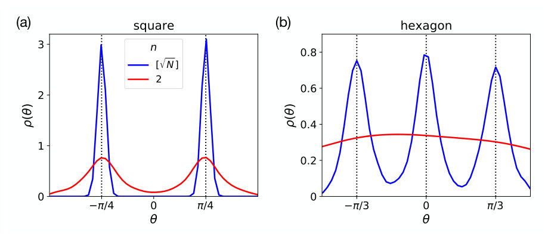
<figcaption class="paper-figure-caption"><b>Fig 5.</b> Figure 5: The distribution of the final trend angle for (a) square and (b) hexagon geometry constraints for n = [ √</figcaption>
</figure>
</div>

<p><strong>Summary.</strong> This work investigates how self-propelled swarms can achieve global order using only sparse, random local information sampling. The authors demonstrate that this sparse sampling is highly efficient, showing that even reducing the sampled subset size can accelerate alignment. The findings establish a theoretical and experimental framework for information-efficient collective coordination.</p>
<p><strong>Why it may be interesting.</strong> The concept of using inherent estimation noise (fluctuations) as the driving force for spontaneous symmetry breaking and collective order is a general principle applicable to non-equilibrium statistical physics and complex systems.</p>
<details>
<summary>Detailed structure</summary>
<p><strong>Main problem.</strong> The core challenge is achieving global coordination among self-propelled agents without relying on a central controller or dense global communication.</p>
<p><strong>Main result.</strong> Sparse, random sampling is shown to be an information-efficient mechanism that reliably drives disordered populations into a globally aligned, nematic state, with noise playing a constructive role in symmetry breaking.</p>
<p><strong>Method.</strong> The authors combine analytical derivations of predictive criteria with extensive numerical simulations and physical experiments using differential-drive robots.</p>
<p><strong>Model / system.</strong> The model consists of N point particles (or robots) in 2D, where each agent periodically reorients its motion toward the centroid of a small, randomly sampled subset of its peers.</p>
<p><strong>Key observables.</strong> Nematic Order Parameter (S(t)), Circular Variance, and Trend Formation Time (t_f).</p>
<p><strong>Important parameters / regimes.</strong> Sampling size (n), sampling frequency, and the reorientation threshold ($R_T = \sqrt{N}$).</p>
<p><strong>Assumptions / limitations.</strong> The dynamics are modeled as collisionless point-particle motion, and the experimental setup maps this idealized model onto physical robots using non-overlapping offsets.</p>
<p><strong>Figures summary.</strong> Figures compare the evolution of alignment (nematic order) and the time required to reach alignment ($t_f$) when using different sampling sizes ($n=2$ vs. $n=[\sqrt{N}]$), demonstrating that smaller samples accelerate ordering.</p>
<p><strong>Paper structure.</strong> The paper progresses from defining the minimal model dynamics, to analyzing the role of sampling size on ordering metrics, deriving analytical criteria, and finally validating these findings through physical robot experiments.</p>
</details>
<details>
<summary>Abstract</summary>
<p>Achieving global coordination without a central controller or dense global communication is a defining challenge for both biological collectives and engineered swarms. We introduce and analyze a minimal model in which self-propelled agents in a bounded domain periodically reorient their motions toward the centroid of a small, randomly chosen subset of their peers, with no direct sensing of any individual neighbor's position or heading. We show that this sparse, non-local sampling rule reliably drives an initially disordered population to a globally aligned, nematic state, and that shrinking the sampled subset -- down to the minimum of two agents -- accelerates ordering rather than impeding it: the resulting estimation noise, filtered through a geometric turning rule, is itself the engine of symmetry breaking. We derive an analytical criterion, in quantitative agreement with simulation, that predicts when this ordering succeeds as a function of the sampling size and sampling frequency. We confirm the mechanism experimentally in a swarm of up to fifteen differential-drive robots. These results identify sparse random sampling as an information-efficient route to collective coordination, with implications for understanding animal collectives and for designing communication-limited robotic swarms.</p>
</details>
<p><sub><a href="#top">↑ back to top</a></sub></p>

<p><a id="paper-2610.09036"></a></p>
<h3 id="ambipolar-metal-insulator-transition-in-bilayer-mose2"><a href="http://arxiv.org/abs/2610.09036v1">Ambipolar metal-insulator transition in bilayer MoSe2</a></h3>
<p><strong>Authors:</strong> Ha-Leem Kim, Hyungbin Lim, Terry Wu, Amogh Y. Waghmare, Garima Gupta, Takashi Taniguchi, Kenji Watanabe, Archana Raja, Eric Y. Ma, Feng Wang<br>
<strong>Type:</strong> experiment · <strong>Category:</strong> strongly correlated electrons · <strong>PDF:</strong> <a href="https://arxiv.org/pdf/2610.09036v1">https://arxiv.org/pdf/2610.09036v1</a><br>
<strong>Analysis basis:</strong> full PDF text, analyzed in chunks
<strong>Topic relevance:</strong> <code>quantum measurements</code> <strong>1/5</strong></p>
<div class="figure-strip-hint">↔ Scroll figures horizontally</div>
<div class="paper-figures-scroll">
<figure class="paper-figure-card">
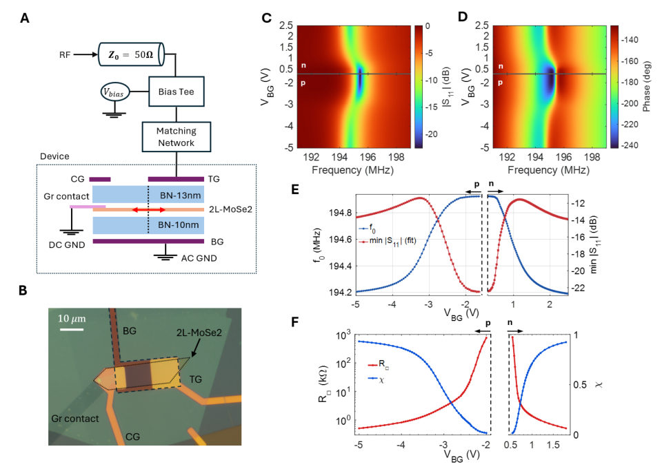
<figcaption class="paper-figure-caption"><b>Fig 1.</b> Fig. 1. Radio-frequency reflectometry of bilayer MoSe2. (A) Circuit schematic and device cross-section. The RF signal is applied to the top-gate (TG) through a bias tee and an impedance-matching network, while the back-gate (BG) is AC-grounded. The bilayer MoSe2 (2L-MoSe2) channel is encapsulated between 13-nm top and 10-nm bottom hBN dielectrics and connected to a graphite contact (Gr contact) held at DC ground. The contact-gate (CG) dopes the contact region to maintain rapid carrier equilibration during gate sweeps. At the RF measurement frequency this contact is effectively open; the readout therefore probes the in-plane motion of carriers through capacitive coupling to the gates. The...</figcaption>
</figure>
<figure class="paper-figure-card">
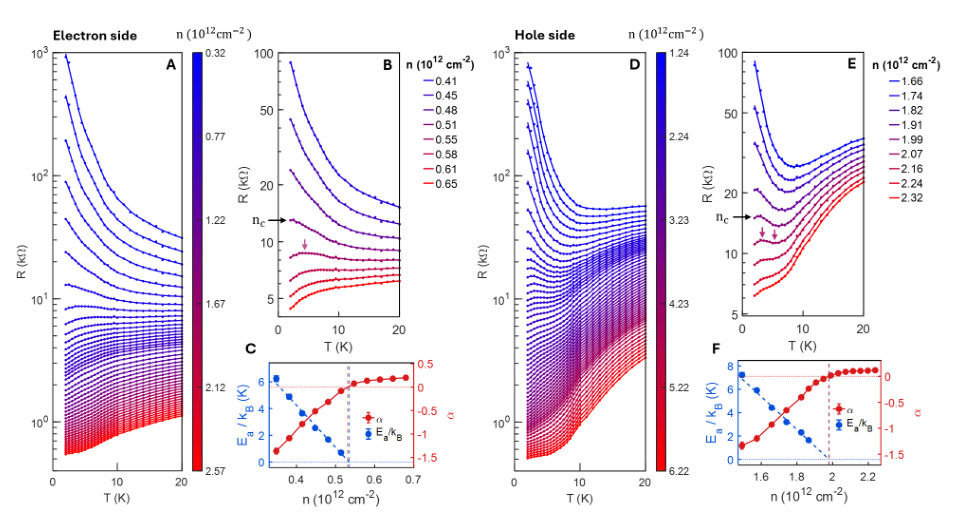
<figcaption class="paper-figure-caption"><b>Fig 2.</b> Fig. 2. Density-tuned metal–insulator transition of bilayer MoSe2. (A) Channel sheet resistance R versus temperature T (2–20 K) on the electron side, at carrier densities n = 0.32–2.57 × 1012 cm−2 (color scale). The curves evolve from insulating (R increasing on cooling; blue) to metallic (R decreasing on cooling; red). (B) Magnified view of the electron-side crossover range (n = 0.41–0.65 × 1012 cm−2). The labeled arrow marks the curve nearest to nc; the small arrow marks the local resistance maximum at ≈ 4.5 K on the metallic side. (C) Activation energy Ea/kB (blue, left axis) and the low-temperature logarithmic slope α = d ln R/d ln T evaluated over 2–4 K (red, right axis), versus n. Ea...</figcaption>
</figure>
<figure class="paper-figure-card">
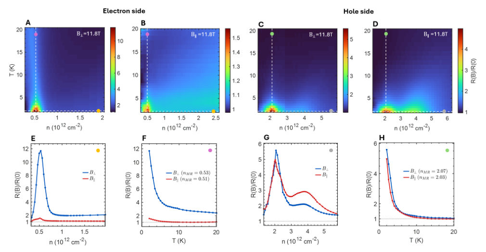
<figcaption class="paper-figure-caption"><b>Fig 3.</b> Fig. 3. In-plane and out-of-plane magnetotransport across the metal–insulator transition. (A to D) Magnetoresistance (MR) ratio of the sheet resistance, R(B)/R(0) at B = 11.8 T across the (n, T) plane, for electrons in out-of-plane (B⊥) (A) and in-plane (B∥) (B) fields and for holes in B⊥ (C) and B∥ (D) fields. For every carrier and orientation, the ratio exhibits a pronounced peak at nMR, which lies close to the temperature-based critical-density estimate nc from Fig. 2. The vertical dashed line marks nMR and the horizontal dashed line marks T = 2 K; together with the markers, they indicate the temperature and density cuts shown below. (E and G) MR ratio as a function of density at T = 2...</figcaption>
</figure>
<figure class="paper-figure-card">
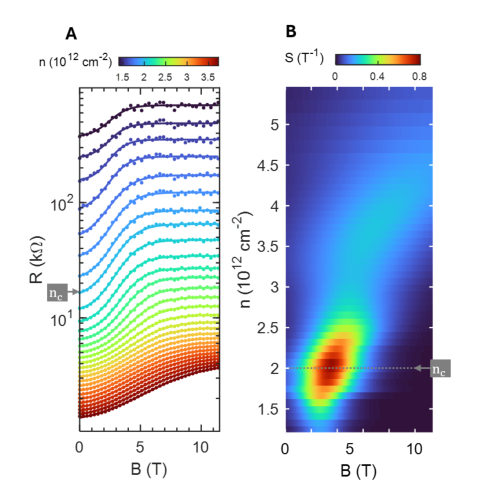
<figcaption class="paper-figure-caption"><b>Fig 4.</b> Fig. 4. Field-resolved in-plane critical-density magnetoresistance (hole side). (A) Sheet resistance R versus in- plane magnetic field B at T = 2.2 K for a series of hole densities n (color scale). Dots are measured data and solid lines are logistic fits [(36), section 1]. The gray arrow marks the zero-field critical density nc. (B) Normalized differential response S = [1/R(0)] dR/dB in the (B, n) plane computed from the fitted curves of (A). The strong enhancement of S is centered at nc ≈ 2.0 × 1012 cm−2 (dotted line); a much weaker response at higher densities is widely distributed over the measured field range.</figcaption>
</figure>
</div>

<p><strong>Summary.</strong> This work reports on the ambipolar metal-insulator transition in bilayer MoSe2 using advanced contact-free radio-frequency reflectometry. By measuring both electron and hole transport, the authors provide strong evidence that the MIT is governed by strong electron-electron interactions, leading to Wigner crystallization. This opens a quantitative transport window for studying correlated states in high-quality 2D semiconductors.</p>
<p><strong>Why it may be interesting.</strong> The work provides quantitative transport measurements in a clean, tunable 2D system, offering experimental validation for theoretical models describing strongly correlated phases like Wigner crystals.</p>
<details>
<summary>Detailed structure</summary>
<p><strong>Main problem.</strong> The paper investigates the metal-insulator transition (MIT) in two dimensions, specifically resolving the long-standing debate over whether Coulomb interactions or disorder primarily drive this transition.</p>
<p><strong>Main result.</strong> The study demonstrates interaction-driven MITs in bilayer MoSe2 for both electrons and holes, evidenced by comparable Wigner-Seitz radii at transition, and maps the transition using contact-free RF reflectometry.</p>
<p><strong>Method.</strong> The authors employed contact-free radio-frequency (RF) reflectometry to measure sheet resistance and magnetotransport properties in the bilayer semiconductor.</p>
<p><strong>Model / system.</strong> The physical system is bilayer MoSe2, a semiconductor used to study ambipolar transport. The measurements probe the transition between a correlated liquid and a Wigner solid state.</p>
<p><strong>Key observables.</strong> Sheet resistance (R) vs. carrier density, Magnetoresistance (MR) peaks, and resonance frequency ($f_0$) shifts.</p>
<p><strong>Important parameters / regimes.</strong> Wigner-Seitz radii ($r_s$), critical densities ($n_c$), and the ratio of Coulomb interaction energy to kinetic energy.</p>
<p><strong>Assumptions / limitations.</strong> The RF readout is non-perturbative, and the analysis compares results to theoretical benchmarks derived from disorder-free, symmetric gate geometries.</p>
<p><strong>Figures summary.</strong> Figures show RF spectra, extracted sheet resistance vs. density (for both electron and hole doping), and magnetotransport ratios mapping the MIT.</p>
<p><strong>Paper structure.</strong> The paper systematically presents the experimental setup, characterizes the ambipolar MIT using RF measurements, analyzes the temperature and magnetic field dependence of the transition, and compares findings to theoretical models of correlated electron systems.</p>
</details>
<details>
<summary>Abstract</summary>
<p>When Coulomb interactions dominate kinetic energy, dilute two-dimensional carriers form a Wigner solid. Both its melting and disorder-driven localization can drive density-tuned metal-insulator transitions, but their relative roles and interplay have been debated for decades. Atomically thin semiconductors offer a new test because transport and scanning tunneling microscopy can probe the same material, yet poor contacts impede transport where correlations are strongest. Here we introduce contact-free radio-frequency reflectometry that senses sheet resistance through capacitive gate coupling. It resolves the electron and previously inaccessible hole transitions in the same bilayer MoSe2 device, whose carriers share disorder but not mass. Their critical densities differ fourfold yet correspond to comparable Coulomb-to-kinetic-energy ratios, where tunneling microscopy finds solid-liquid coexistence. Magnetoresistance peaks sharply at each transition, reflecting a Pomeranchuk-like, field-driven expansion of the Wigner solid against the correlated liquid. Our results demonstrate interaction-driven transitions in high-quality two-dimensional semiconductors, opening quantitative transport in contact-limited systems.</p>
</details>
<p><sub><a href="#top">↑ back to top</a></sub></p>

<p><a id="paper-2610.10531"></a></p>
<h3 id="efficient-estimation-of-logical-sensitivities-through-fault-counting"><a href="http://arxiv.org/abs/2610.10531v1">Efficient Estimation of Logical Sensitivities Through Fault-Counting</a></h3>
<p><strong>Authors:</strong> Winston Fu, J. Wilson Staples, Jeff D. Thompson<br>
<strong>Type:</strong> theory · <strong>Category:</strong> quantum information and computing · <strong>PDF:</strong> <a href="https://arxiv.org/pdf/2610.10531v1">https://arxiv.org/pdf/2610.10531v1</a><br>
<strong>Analysis basis:</strong> full PDF text, analyzed in chunks
<strong>Topic relevance:</strong> <code>methods for driven-dissipative</code> <strong>1/5</strong></p>
<div class="figure-strip-hint">↔ Scroll figures horizontally</div>
<div class="paper-figures-scroll">
<figure class="paper-figure-card">
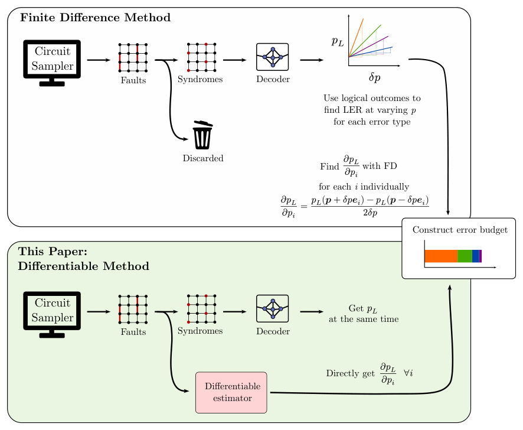
<figcaption class="paper-figure-caption"><b>Fig 1.</b> FIG. 1: Overview of contributions. Top: The standard approach to finding sensitivities and error budgets is the finite difference method. This involves using values of pL measured at various p to calculate gradients, requiring multiple simulations at different p. ei is the unit vector in the pi direction. Bottom: We introduce a differentiable estimator to estimate sensitivities using samples at only one p. The sensitivity to different components of p is extracted from the sampled fault locations, which are ordinarily discarded if the only object is to compute pL.</figcaption>
</figure>
<figure class="paper-figure-card">
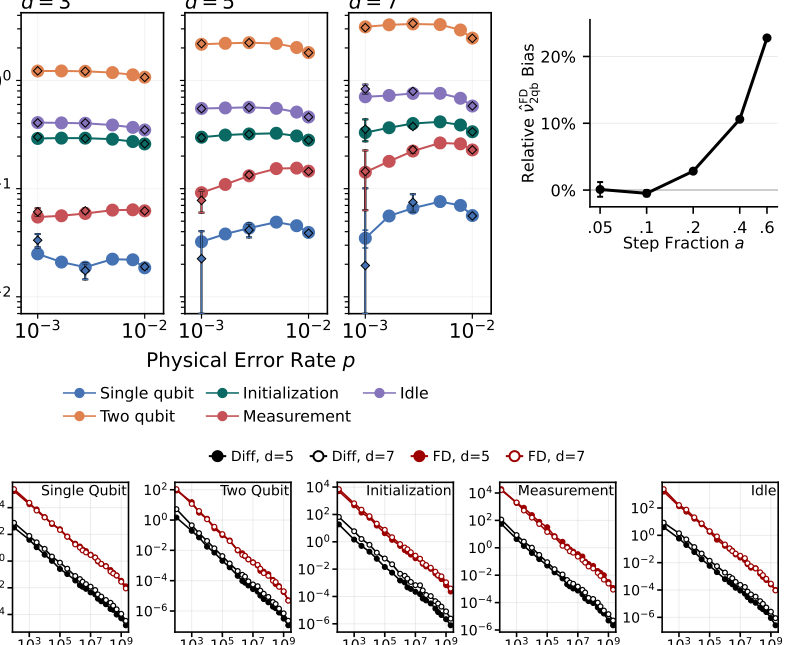
<figcaption class="paper-figure-caption"><b>Fig 2.</b> FIG. 2: (a) Logarithmic sensitivities ∂log pL/∂log pi , over a range of p. Circles are the estimates obtained using Diff, while diamonds are estimates obtained using FD. (b) Relative difference between ˆνFD 2qb and ˆνDiff 2qb at different step fractions a, for d = 7 at p = 0.005. As the sensitivity is measured over a larger range of p, higher-order terms cause a bias in the measured sensitivity. (c) Fractional variance in sensitivity from Diff and FD at varying shot budgets, obtained from 200 bootstrap samples of 2 × 109 shots for each error type at step fraction a = 0.1.</figcaption>
</figure>
<figure class="paper-figure-card">
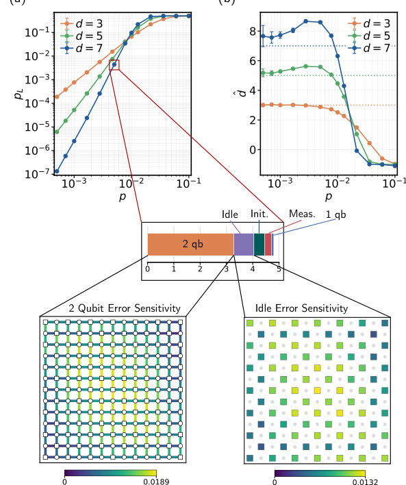
<figcaption class="paper-figure-caption"><b>Fig 3.</b> FIG. 3: (a) A pL vs p sweep of a surface code at distances 3, 5, and 7. Using Diff, the samples collected at each point on the curve can also be used to estimate a breakdown of νi by error type, round number, spatial location, and individual fault. The spatial sensitivity heatmaps, aggregated over d rounds, are shown for two-qubit gate errors and idle errors, where squares represent data qubits and circles represent ancilla qubits. The plotted values are logarithmic sensitivities, ∂log pL/∂log pi . (b) At the same time, the sum of sensitivities gives a local unbiased measurement of the slope of the pL vs p curve, which can be used to calculate the local effective distance scaling factor. In...</figcaption>
</figure>
<figure class="paper-figure-card">
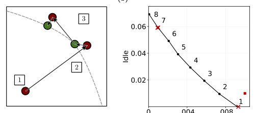
<figcaption class="paper-figure-caption"><b>Fig 4.</b> FIG. 4: (a) Illustration of the threshold-finding algorithm for the case s = 2. The gray line shows the threshold contour between error types p1 and p2 that needs to be found. Boxed numbers represent the steps of the algorithm. Step 1: For two distances d1 and d2, sample the circuits at some p0, measure pL, and calculate ∆(p0), while also using Diff to find ∇p∆(p0) from the same set of data. Step 2: The Newton step predicts a new point p1 for which ∆(p1) = 0. Repeat until the convergence criteria are met. Step 3: Choosing a p2 where p2 −p1 is orthogonal to the vector ∇p∆(p1). This leaves ∆(p2) = 0 to first order, and so is close to the threshold as well. Repeat root finding until this next...</figcaption>
</figure>
<figure class="paper-figure-card">
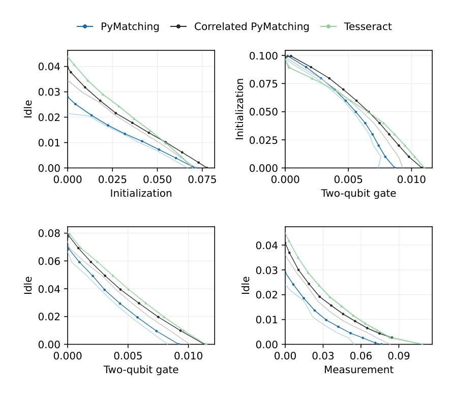
<figcaption class="paper-figure-caption"><b>Fig 5.</b> FIG. 5: Threshold contours for four error type pairs, using PyMatching, Correlated PyMatching, and Tesseract. Uncertainty in contour position due to statistical uncertainty in ∆is plotted as a lightly shaded region around each contour line. For PyMatching and Correlated PyMatching, darker shades show the thresholds found using the (5, 7) distance pair. Lighter shades show the (3, 5) distance pair. For Tesseract, only the (3, 5) distance pair was measured.</figcaption>
</figure>
</div>

<p><strong>Summary.</strong> This paper introduces a differentiable estimator to overcome the shot-budget limitations of traditional finite difference methods when calculating logical sensitivities in quantum error correction. By estimating the full gradient from a single simulation run, it drastically reduces the required computational resources. This efficiency allows researchers to accurately map out critical performance boundaries, such as noise thresholds, in complex, multi-parameter noise models.</p>
<p><strong>Why it may be interesting.</strong> This work provides a powerful, statistically efficient tool for characterizing the robustness of quantum codes, which is crucial for designing fault-tolerant quantum computers by precisely mapping out the boundaries of reliable operation in complex noise landscapes.</p>
<details>
<summary>Detailed structure</summary>
<p><strong>Main problem.</strong> The paper addresses the need for an efficient method to estimate logical sensitivities ($
u_i = \partial p_L / \partial p_i$), which quantify how the logical error rate ($p_L$) responds to individual physical noise parameters ($p_i$) in quantum error correction.</p>
<p><strong>Main result.</strong> A novel differentiable estimator can calculate all components of the gradient $
abla_{\mathbf p}p_L$ simultaneously from a single Monte Carlo data set, achieving a significant reduction (one to two orders of magnitude) in required simulation shots compared to standard finite difference methods.</p>
<p><strong>Method.</strong> The core method is a differentiable estimator that leverages information about underlying fault configurations to estimate partial derivatives of the logical error rate. This is combined with Newton root finding to trace threshold contours in multi-dimensional noise models.</p>
<p><strong>Model / system.</strong> The primary model is quantum error-correcting circuits, specifically using the surface code subjected to circuit-level noise. The analysis is performed on the logical error rate $p_L$ as a function of various physical noise parameters $p_i$.</p>
<p><strong>Key observables.</strong> Logical Error Rate ($p_L$), Logical Sensitivities ($
u_i = \partial p_L / \partial p_i$), Threshold Contours ($\Delta(p) = 0$).</p>
<p><strong>Important parameters / regimes.</strong> Physical noise parameters ($p_i$), circuit distance ($d$), shot budget ($N$), and the step size ($h$) used in finite difference methods.</p>
<p><strong>Assumptions / limitations.</strong> The differentiable estimator relies on accessing underlying fault configurations in stabilizer tableau simulations. The analysis often uses linear approximations for small error rates and assumes the ability to use local sensitivity information to guide root finding.</p>
<p><strong>Figures summary.</strong> Figures compare the variance and estimates of sensitivities ($
u_i$) between the proposed differentiable method and standard finite differences. Other figures illustrate the tracing of threshold contours in multi-parameter noise spaces.</p>
<p><strong>Paper structure.</strong> The paper first introduces the problem of sensitivity estimation, contrasts the standard finite difference approach with the proposed differentiable estimator, demonstrates the superior variance scaling of the new method, and finally applies this technique to locate and trace threshold contours in complex noise models using Newton root finding.</p>
</details>
<details>
<summary>Abstract</summary>
<p>Quantum error-correcting circuits are affected by multiple physical noise mechanisms, whose contributions to logical failure must be understood to evaluate code performance and guide improvements in hardware. The individual error budget contributions for an error type $i$ can be characterized by its logical sensitivity $ν_i = \frac{\partial p_L}{\partial p_i}$, which measures the response of the logical error rate $p_L$ to each physical noise parameter $p_i$. Normally, $ν_i$ is measured using linear fits such as finite differences, where $p_L$ is measured at two or more values of $p_i$ to calculate partial derivatives. In this paper, we develop a differentiable estimator to obtain all components of $\nabla_{\mathbf p}p_L$ simultaneously from a single Monte Carlo data set at one noise configuration, using information about the underlying fault configurations. In surface code simulations with circuit-level noise, the estimator agrees with conventional finite differences while requiring one to two orders of magnitude fewer shots to achieve the same variance. We apply this technique to quantify error budgets, resolve sensitivities at the individual qubit level, and infer effective code distance. Finally, we incorporate the sensitivities into Newton root finding to locate and trace threshold contours in multidimensional noise models. These results provide an efficient method for extracting and applying logical sensitivity information from standard quantum error correction simulations.</p>
</details>
<p><sub><a href="#top">↑ back to top</a></sub></p>

<p><a id="paper-2610.08945"></a></p>
<h3 id="efficiently-computable-bounds-on-the-energy-constrained-quantum-reading-capacity"><a href="http://arxiv.org/abs/2610.08945v1">Efficiently computable bounds on the energy-constrained quantum reading capacity</a></h3>
<p><strong>Authors:</strong> Vishal Singh, Zixin Huang, Mark M. Wilde<br>
<strong>Type:</strong> theory · <strong>Category:</strong> quantum information and computing · <strong>PDF:</strong> <a href="https://arxiv.org/pdf/2610.08945v1">https://arxiv.org/pdf/2610.08945v1</a><br>
<strong>Analysis basis:</strong> full PDF text, analyzed in chunks
<strong>Topic relevance:</strong> <code>quantum measurements</code> <strong>1/5</strong></p>
<div class="figure-strip-hint">↔ Scroll figures horizontally</div>
<div class="paper-figures-scroll">
<figure class="paper-figure-card">
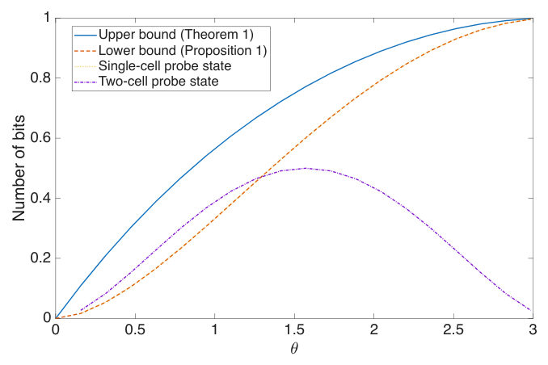
<figcaption class="paper-figure-caption"><b>Fig 1.</b> FIG. 1. Comparison of upper and lower bounds on the unconstrained reading capacity of the pair of qubit unitary channels defined in (128). The lower bound computed using the bilinear program in Appendix B overlaps with the single-cell probe state bound given in (129).</figcaption>
</figure>
<figure class="paper-figure-card">
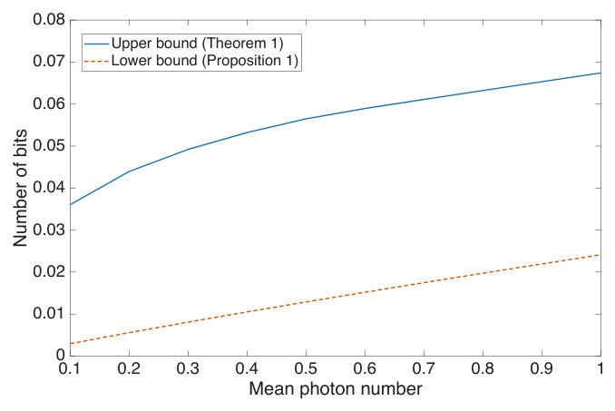
<figcaption class="paper-figure-caption"><b>Fig 2.</b> FIG. 2. Upper and lower bounds on the energy constrained reading capacity of a pair of loss–dephasing channels plotted against the average photon number per channel probe. In this example, the first channel has the parameters η1 = 0.95, γ1 = 0.01, and the second channel has the parameters η2 = 0.85, γ2 = 0.01. The output dimension of the channel is truncated to four.</figcaption>
</figure>
</div>

<p><strong>Summary.</strong> This work establishes theoretical upper and lower bounds for the energy-constrained quantum reading capacity. It tackles the problem by utilizing advanced quantum information measures like relative entropies within semidefinite programming frameworks. The results provide a quantitative understanding of how energy limitations restrict the information rate achievable in quantum communication channels.</p>
<p><strong>Why it may be interesting.</strong> The rigorous derivation of capacity bounds under physical constraints like energy is crucial for designing realistic quantum communication protocols, bridging abstract theory with physical implementability.</p>
<details>
<summary>Detailed structure</summary>
<p><strong>Main problem.</strong> The paper determines the energy-constrained quantum reading capacity of a finite family of quantum channels.</p>
<p><strong>Main result.</strong> Upper and lower bounds for this capacity are derived using advanced information-theoretic tools, showing how the capacity relates to channel relative entropies under an energy constraint.</p>
<p><strong>Method.</strong> The authors use semidefinite programming (SDP) techniques, involving approximations of relative entropies (Belavkin-Staszewski and Umegaki) and alternating optimization to establish rigorous bounds.</p>
<p><strong>Model / system.</strong> The model is quantum reading, where classical messages are encoded into sequences of quantum channels, and the reader probes these channels while respecting an average energy constraint on the probes.</p>
<p><strong>Key observables.</strong> Quantum reading capacity ($R_{H,E}(N)$), Holevo information, Belavkin–Staszewski relative entropy, and Umegaki relative entropy.</p>
<p><strong>Important parameters / regimes.</strong> The average probing energy constraint ($E$), the set of quantum channels ($\{N_x\}$), and the number of uses ($n$).</p>
<p><strong>Assumptions / limitations.</strong> The upper bound relies on SDP approximations using Gauss-Legendre quadrature, and the lower bound is derived via bilinear programming, both of which involve approximations.</p>
<p><strong>Figures summary.</strong> Figure 1 compares upper and lower bounds for unconstrained capacity for unitary channels, showing overlap. Figure 2 plots upper and lower bounds for loss-dephasing channels against the average photon number.</p>
<p><strong>Paper structure.</strong> The paper develops the converse bound using relative entropy techniques, establishes the upper bound via SDP (Appendix A), and derives the lower bound using bilinear programming (Appendix B), culminating in comparisons and numerical examples.</p>
</details>
<details>
<summary>Abstract</summary>
<p>In quantum reading, classical messages are encoded in sequences of quantum channels and recovered by probing the channels and processing their outputs. We study the reading capacity of a finite family of finite-dimensional channels under an average constraint on the probing energy, allowing arbitrary adaptive operations between channel uses. Using an input-dependent chain rule for the Belavkin-Staszewski relative entropy, we derive a converse bound expressed as an optimization involving channel Choi operators and the operator relative entropy. This formulation admits semidefinite approximations and reduces, without an energy constraint, to a channel information radius. To obtain achievable rates, we construct bilinear semidefinite lower approximations to a standard non-adaptive reading bound. Alternating optimization produces feasible probe states and encoding distributions, whose Holevo information gives a directly evaluable achievable rate. For jointly classical-quantum channels, we derive a separate converse based on the Umegaki relative entropy. Without an energy constraint, this converse matches a non-adaptive achievable rate, recovering a recent result of Pascual Abraldes and Winter: non-adaptive protocols suffice to achieve the unconstrained reading capacity of jointly classical-quantum channels.</p>
</details>
<p><sub><a href="#top">↑ back to top</a></sub></p>

<p><a id="paper-2610.09783"></a></p>
<h3 id="electronic-properties-of-ladder-type-phenylenes-studied-by-thermally-assisted-occupation-density-functional-theory"><a href="http://arxiv.org/abs/2610.09783v1">Electronic Properties of Ladder-Type Phenylenes Studied by Thermally-Assisted-Occupation Density Functional Theory</a></h3>
<p><strong>Authors:</strong> Tsu-Hsuan Wang, Jeng-Da Chai<br>
<strong>Type:</strong> theory · <strong>Category:</strong> strongly correlated electrons · <strong>PDF:</strong> <a href="https://arxiv.org/pdf/2610.09783v1">https://arxiv.org/pdf/2610.09783v1</a><br>
<strong>Analysis basis:</strong> full PDF text, analyzed in chunks
<strong>Topic relevance:</strong> <code>Keldysh / 2PI / non-Gaussian methods</code> <strong>1/5</strong></p>
<div class="figure-strip-hint">↔ Scroll figures horizontally</div>
<div class="paper-figures-scroll">
<figure class="paper-figure-card">
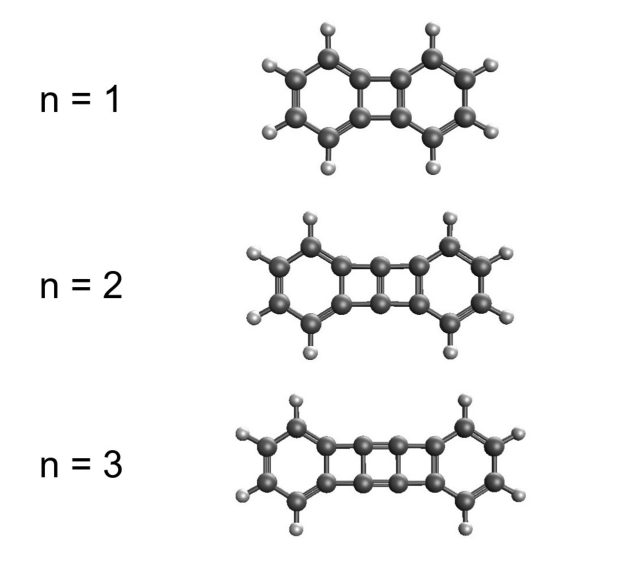
<figcaption class="paper-figure-caption"><b>Fig 1.</b> FIG. 1. Geometry of n-LP (with n = 1–3), containing n fused four-membered carbon rings.</figcaption>
</figure>
<figure class="paper-figure-card">
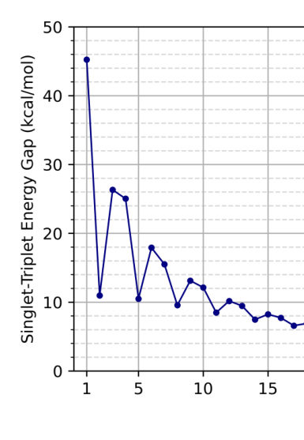
<figcaption class="paper-figure-caption"><b>Fig 2.</b> FIG. 2. Singlet-triplet energy gap of n-LP, calculated using spin-unrestricted TAO-LDA.</figcaption>
</figure>
<figure class="paper-figure-card">
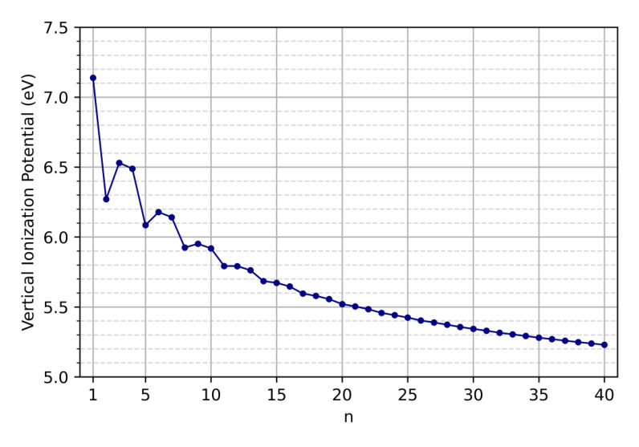
<figcaption class="paper-figure-caption"><b>Fig 3.</b> FIG. 3. Vertical ionization potential of ground-state n-LP, calculated using spin-unrestricted</figcaption>
</figure>
<figure class="paper-figure-card">
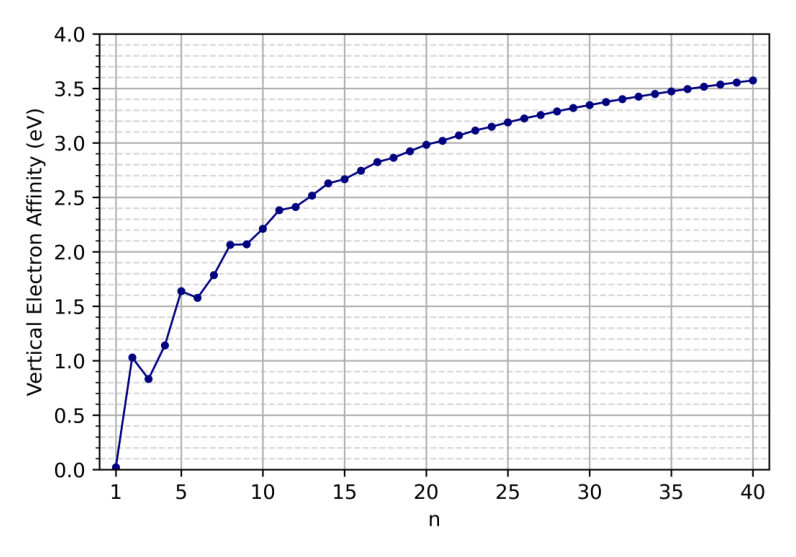
<figcaption class="paper-figure-caption"><b>Fig 4.</b> FIG. 4. Vertical electron affinity of ground-state n-LP, calculated using spin-unrestricted TAO-</figcaption>
</figure>
<figure class="paper-figure-card">
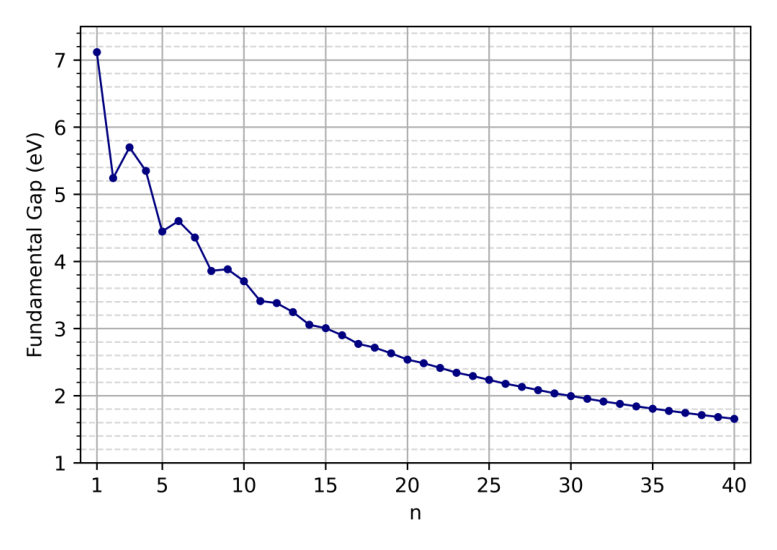
<figcaption class="paper-figure-caption"><b>Fig 5.</b> FIG. 5. Fundamental gap of ground-state n-LP, calculated using spin-unrestricted TAO-LDA.</figcaption>
</figure>
</div>

<p><strong>Summary.</strong> This work applies TAO-DFT to study ladder-type phenylenes, revealing that their electronic properties are not monotonic but exhibit a distinct damped periodic oscillation with a period of three. This periodicity dictates a transition between closed-shell and polyradical states, offering fundamental guidelines for the rational design of these carbon-based nanomaterials.</p>
<p><strong>Why it may be interesting.</strong> The study provides a detailed, quantitative understanding of how structural periodicity dictates electronic correlation in extended $\pi$-systems, which is crucial for designing next-generation organic electronic materials.</p>
<details>
<summary>Detailed structure</summary>
<p><strong>Main problem.</strong> Accurately predicting the electronic properties of extended pi-conjugated systems containing radical character, which is a major theoretical challenge due to strong static correlation effects.</p>
<p><strong>Main result.</strong> The electronic properties of ladder-type phenylenes exhibit a unique damped periodic oscillation, with highly correlated hotspots appearing at intervals $n = 3k - 1$. This periodicity governs the transition from nonradical to polyradical character.</p>
<p><strong>Method.</strong> The study employs Thermally-Assisted-Occupation Density Functional Theory (TAO-DFT) to efficiently capture static correlation effects in these large systems.</p>
<p><strong>Model / system.</strong> The physical system is ladder-type phenylenes ($n$-LPs), which are extended $\pi$-conjugated systems formed by $n$ fused four-membered carbon rings, studied for $n=1$ to $40$.</p>
<p><strong>Key observables.</strong> Singlet-Triplet Energy Gap (EST), radical character, Symmetrized von Neumann Entropy (SvN), Vertical Ionization Potential ($I_v$), Electron Affinity ($E_a$), and Fundamental Gap ($E_g$).</p>
<p><strong>Important parameters / regimes.</strong> The periodicity of 3 in the electronic structure, and the specific structural localization of active orbitals along the central ladder framework.</p>
<p><strong>Assumptions / limitations.</strong> The primary approximation is the use of TAO-DFT, which is assumed to accurately model static correlation effects, overcoming limitations of standard KS-DFT.</p>
<p><strong>Figures summary.</strong> Figures systematically present calculated properties (gap, IP, EA, etc.) and real-space orbital distributions for small $n$ (up to $n=5$), demonstrating the evolution of electronic structure.</p>
<p><strong>Paper structure.</strong> The paper systematically analyzes the electronic structure evolution of $n$-LPs using TAO-DFT, focusing on how key observables like the S-T gap and radical character oscillate with chain length $n$, contrasting this periodicity with monotonic trends seen in other nanographenes.</p>
</details>
<details>
<summary>Abstract</summary>
<p>Accurate prediction of the electronic properties of extended $π$-conjugated systems with radical character remains a major theoretical challenge. To overcome this challenge, thermally-assisted-occupation density functional theory (TAO-DFT) has been developed in recent years. In this study, we employ TAO-DFT to systematically explore the electronic properties of ladder-type phenylenes ($n$-LPs), containing $n$ fused four-membered carbon rings. Our calculations reveal that all investigated $n$-LPs (with $n$ = 1 ~ 40) possess singlet ground states. With increasing $n$-LP size, we observe a transition from the nonradical character of smaller $n$-LPs to the polyradical character of larger $n$-LPs. Notably, we identify a distinct damped periodic oscillation in the radical character of $n$-LPs, featuring highly correlated hotspots at specific intervals ($n = 3k - 1$, where $k$ are positive integers). The real-space representation of active orbitals confirms this global electronic behavior is governed by the structural localization of active orbitals along the central ladder framework. These findings provide fundamental insights into the size-dependent electronic properties of $n$-LPs, guiding their rational design for future nanomaterial applications.</p>
</details>
<p><sub><a href="#top">↑ back to top</a></sub></p>

<p><a id="paper-2610.10350"></a></p>
<h3 id="finite-size-scaling-analysis-of-three-dimensional-z2-and-o2-spin-models-with-non-vanishing-symmetry-breaking-parameter"><a href="http://arxiv.org/abs/2610.10350v1">Finite-size scaling analysis of three dimensional Z(2) and O(2) spin models with non-vanishing symmetry breaking parameter</a></h3>
<p><strong>Authors:</strong> Jishnu Goswami, Frithjof Karsch, Sabarnya Mitra<br>
<strong>Type:</strong> both · <strong>Category:</strong> statistical mechanics · <strong>PDF:</strong> <a href="https://arxiv.org/pdf/2610.10350v1">https://arxiv.org/pdf/2610.10350v1</a><br>
<strong>Analysis basis:</strong> full PDF text, analyzed in chunks
<strong>Topic relevance:</strong> <code>analog quantum simulation</code> <strong>1/5</strong></p>
<div class="figure-strip-hint">↔ Scroll figures horizontally</div>
<div class="paper-figures-scroll">
<figure class="paper-figure-card">
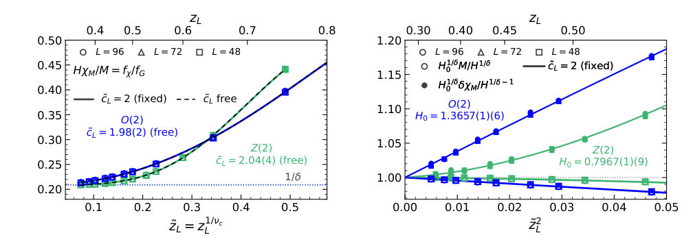
<figcaption class="paper-figure-caption"><b>Fig 1.</b> FIG. 1. (Left:) The ratio HχM(Tc, H, L)/M(Tc, H, L) versus the scaling variable ezL for the 3-d, Z(2) and O(2) spin models on cubic lattices of size L3 with L = 48, 72 and 96. (Right:) The scaled order parameter M/h1/δ and scaled susceptibility H0δχM/h1/δ−1 versus ez2 L for both Z(2) and O(2) model. While in the O(2) universality class the leading order term provides a good description for zL ≤0.55, a significant influence of higher order terms in the expansion are seen for the Z(2) universality class above zL ≃0.4 (see text). Note that the conversion from the ezL scale shown on the lower x-axis to the zL scale shown on the upper x-axis is done for the O(2) case. Differences for the same in...</figcaption>
</figure>
<figure class="paper-figure-card">
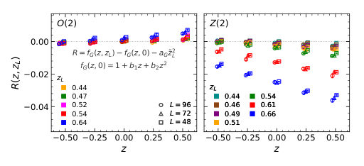
<figcaption class="paper-figure-caption"><b>Fig 2.</b> FIG. 3. Sub-leading corrections to the FSS functions in the 3-d, O(2) (left) and Z(2) (right) universality classes versus z, for several values of zL, 0.44 ≤zL ≤0.66.</figcaption>
</figure>
<figure class="paper-figure-card">
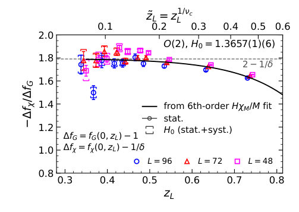
<figcaption class="paper-figure-caption"><b>Fig 3.</b> FIG. 2. The ratio −(fχ(0, zL) −1/δ)/(fG(0, zL) −1) intro- duced in Eq.(14) at Jc = 1/Tc. Shown are results for this ratio obtained from calculations for the 3-d, O(2) spin model.</figcaption>
</figure>
<figure class="paper-figure-card">
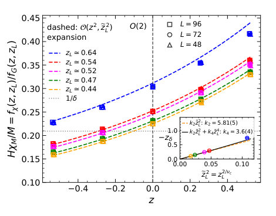
<figcaption class="paper-figure-caption"><b>Fig 4.</b> FIG. 4. The ratio HχM/M versus z for selected zL values, on our working cubic lattices. Shown are results for the 3-d, O(2) model. Corresponding results for the Z(2) model are given in the appendix. The dashed curves are obtained from a truncated series expansion, given in Eq.(19).</figcaption>
</figure>
<figure class="paper-figure-card">
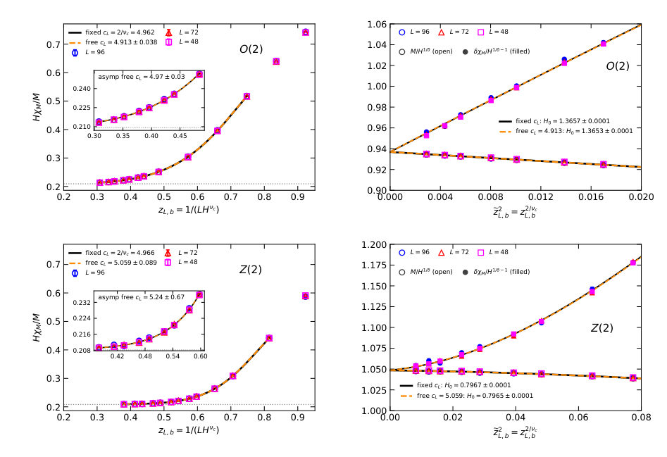
<figcaption class="paper-figure-caption"><b>Fig 5.</b> FIG. 5. (Left:) The ratio HχM/M versus the bare scaling variable zL,b for the 3-d, O(2) (top) and Z(2) (bottom) models. (Right:) The scaled order parameter M/H1/δ (open symbols) and the scaled susceptibility δχM/H1/δ−1 (filled symbols) versus the bare scaling variable ez2 L,b for the 3-d, O(2) (top) and Z(2) (bottom) models.</figcaption>
</figure>
</div>

<p><strong>Summary.</strong> This work performs a detailed finite-size scaling analysis on 3D Z(2) and O(2) spin models in an external field. By determining the leading finite-size correction term, the authors provide a robust method to eliminate systematic errors in calculating critical parameters. This methodology is particularly valuable for studying quantum phase transitions, such as those found in QCD.</p>
<p><strong>Why it may be interesting.</strong> While focused on classical statistical mechanics models, the rigorous application of finite-size scaling techniques and the connection to QCD phase transitions provide valuable methodological insights applicable to quantum critical points in many-body quantum systems.</p>
<details>
<summary>Detailed structure</summary>
<p><strong>Main problem.</strong> The paper aims to determine the leading finite-size scaling corrections to universal functions for 3D Z(2) and O(2) spin models when an external symmetry breaking field is present.</p>
<p><strong>Main result.</strong> The leading finite-size correction is found to be proportional to $e_{z_L}^2 \sim 1/(H L^{1/
u_c})^2$, allowing for the precise elimination of systematic errors in critical temperature determinations, such as in (2+1)-flavor QCD.</p>
<p><strong>Method.</strong> The study employs detailed finite-size scaling (FSS) analysis using high statistics Monte Carlo simulations, fitting scaled observables to scaling ansatze derived from the Renormalization Group approach.</p>
<p><strong>Model / system.</strong> The physical system is the 3-dimensional Z(2) and O(2) spin models, studied under the influence of a non-vanishing external magnetic field H. The analysis uses concepts from lattice field theory and critical phenomena.</p>
<p><strong>Key observables.</strong> The primary observables are the singular parts of thermodynamic quantities, including the order parameter (M) and susceptibility ($\chi_M$), analyzed via scaling functions $f_{\chi}(z, z_L)$ and $f_G(z, z_L)$.</p>
<p><strong>Important parameters / regimes.</strong> Key parameters include the external field H, lattice size L, and the scaling variable $e_{z_L} = 1/(H L^{1/
u_c})$. Critical exponents ($\delta, eta, 
u_c$) are also determined.</p>
<p><strong>Assumptions / limitations.</strong> The analysis assumes that the leading order finite-size correction is controlled by the parameter $e_{z_L}^2$, and it compares results across different scaling variables to estimate systematic uncertainties.</p>
<p><strong>Figures summary.</strong> Figure 1 shows scaled observables ($\chi_M/M$, etc.) plotted against $e_{z_L}$ and $e_{z_L}^2$ for both Z(2) and O(2) models. Figure 6 compares the free energy density $f_G$ for both models at zero and non-zero fields. Figure 7 shows the ratio $H\chi M/M$ versus the coupling $z$ for the Z(2) model.</p>
<p><strong>Paper structure.</strong> The paper systematically analyzes the scaling functions for the spin models, first establishing the appropriate scaling variable ($e_{z_L}^2$), then fitting data to extract leading and next-to-leading order coefficients, and finally applying these results to fix systematic errors in physical observables like the chiral transition temperature.</p>
</details>
<details>
<summary>Abstract</summary>
<p>We present results from a detailed finite-size scaling analysis of the $3$-$d$, $Z(2)$ and $O(2)$ spin models in an external field $H$. Using high statistics Monte Carlo data, we obtain the leading finite-size scaling correction to the infinite volume scaling functions. We show that these corrections are proportional to $\widetilde{z}_L^2=1/(H L^{3/(1+1/δ))})^{2}$. This provides the parametric form for finite-size corrections to bulk thermodynamic observables as well as the pseudo-critical temperatures determined at non-vanishing $H$. In particular, it allows to eliminate systematic errors in the analysis of the chiral phase transition temperature in (2+1)-flavor QCD, that arose from the previously not well-controlled ansatz for infinite volume extrapolations. We also establish the validity range of this leading order correction and point out that there are significant differences between the $3$-$d$, $O(2)$ and $Z(2)$ universality classes.</p>
</details>
<p><sub><a href="#top">↑ back to top</a></sub></p>

<p><a id="paper-2610.10143"></a></p>
<h3 id="inequivalent-quantum-resources-from-multipartite-state-discrimination"><a href="http://arxiv.org/abs/2610.10143v1">Inequivalent Quantum Resources from Multipartite State Discrimination</a></h3>
<p><strong>Authors:</strong> Srijani Das, Tuhin Paul, Manasi Patra, Atanu Bhunia, Ramij Rahaman<br>
<strong>Type:</strong> theory · <strong>Category:</strong> quantum information and computing · <strong>PDF:</strong> <a href="https://arxiv.org/pdf/2610.10143v1">https://arxiv.org/pdf/2610.10143v1</a><br>
<strong>Analysis basis:</strong> full PDF text, analyzed in chunks
<strong>Topic relevance:</strong> <code>quantum measurements</code> <strong>1/5</strong></p>
<div class="figure-strip-hint">↔ Scroll figures horizontally</div>
<div class="paper-figures-scroll">
<figure class="paper-figure-card">
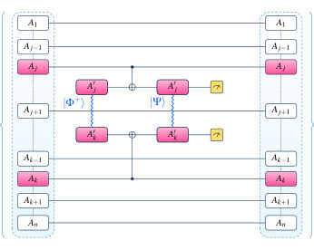
<figcaption class="paper-figure-caption"><b>Fig 1.</b> FIG. 1. Circuit for nondestructive GHZ-state discrimination using an ancillary Bell state |Φ+⟩A′ jA′ k shared between nodes A j(j ∈s) and Ak(k ∈¯s) (pink). Controlled-NOT gates, with the system qubits as controls, are applied from Aj to A′ j and from Ak to A′ k. The ancilla remains in |Φ+⟩for even parity of the two system qubits and trans- forms to |Ψ+⟩for odd parity. Computational-basis measurements of the ancillas therefore reveal the parity without disturbing the input GHZ state, which is recovered unchanged at the output.</figcaption>
</figure>
</div>

<p><strong>Summary.</strong> This work analyzes the resource cost associated with distinguishing orthogonal multipartite quantum states using LOCC. It proves that the required quantum resource is highly dependent on the geometric separation (Hamming distance) between the states. The results establish a clear operational asymmetry, showing that non-zero distance allows for entanglement-preserving discrimination using minimal auxiliary resources.</p>
<p><strong>Why it may be interesting.</strong> The findings provide a fine-grained understanding of multipartite nonlocality by quantifying how geometric properties (Hamming distance) dictate the minimum quantum resources needed for state discrimination, which is crucial for quantum communication protocols.</p>
<details>
<summary>Detailed structure</summary>
<p><strong>Main problem.</strong> The paper investigates the operational resource cost required for locally distinguishing between orthogonal multipartite quantum states, specifically addressing whether this cost is state-dependent.</p>
<p><strong>Main result.</strong> The resource cost of LOCC discrimination is state-dependent, showing that two orthogonal GHZ states with nonzero relative Hamming distance can be distinguished using only a single ancillary Bell pair, while zero-distance pairs require no net quantum resource extraction.</p>
<p><strong>Method.</strong> The authors employ a resource theory framework based on Local Operations and Classical Communication (LOCC), utilizing entanglement monotones and the Hamming distance to characterize distinguishability.</p>
<p><strong>Model / system.</strong> The focus is on multipartite quantum systems, particularly $n$-qubit Greenberger-Horne-Zeilinger (GHZ) states, and the analysis extends to larger ensembles of such states.</p>
<p><strong>Key observables.</strong> Quantum resources (e.g., entanglement), operational cost of LOCC discrimination, and the relative Hamming distance ($d_H$) between the states.</p>
<p><strong>Important parameters / regimes.</strong> The Hamming distance ($d_H$) between the states dictates the required auxiliary resource; the number of qubits ($n$) and the size of the ensemble ($k$) are key parameters.</p>
<p><strong>Assumptions / limitations.</strong> The analysis often assumes the ability to perform non-destructive discrimination, which requires the preservation of the target state's intrinsic multipartite entanglement.</p>
<p><strong>Figures summary.</strong> Figure 1 illustrates the quantum circuit used for nondestructive GHZ-state discrimination, involving an ancillary Bell state shared between two parties and subsequent measurements.</p>
<p><strong>Paper structure.</strong> The paper builds from the bipartite case to the general multipartite case, establishing theorems regarding distinguishability based on the Hamming distance. It contrasts resource consumption for zero vs. non-zero distance pairs, culminating in protocols for entanglement-preserving discrimination.</p>
</details>
<details>
<summary>Abstract</summary>
<p>Any two orthogonal quantum states can be perfectly distinguished via local operations and classical communication (LOCC), yet whether all orthogonal multipartite pairs incur an identical operational cost remains an open question. Here, we address the resource consumption required for local state discrimination across multipartite pair of states. We demonstrate that distinct pairs of orthogonal multipartite maximally entangled states require unequal amounts of quantum resources to achieve local distinguishability. Extending our framework beyond individual pairs, we analyze larger sets of both locally distinguishable and indistinguishable multipartite orthogonal states, revealing a nontrivial hierarchy in their entanglement consumption. These results show that the resource cost of LOCC discrimination is state-dependent, providing insight into the fine-grained structure of multipartite nonlocality.</p>
</details>
<p><sub><a href="#top">↑ back to top</a></sub></p>

<p><a id="paper-2610.09744"></a></p>
<h3 id="mathematical-statistics-of-wild-mammal-biomass"><a href="http://arxiv.org/abs/2610.09744v1">Mathematical statistics of wild mammal biomass</a></h3>
<p><strong>Authors:</strong> Klaus M. Frahm, Dima L. Shepelyansky, José Lages<br>
<strong>Type:</strong> theory · <strong>Category:</strong> statistical mechanics · <strong>PDF:</strong> <a href="https://arxiv.org/pdf/2610.09744v1">https://arxiv.org/pdf/2610.09744v1</a><br>
<strong>Analysis basis:</strong> full PDF text, analyzed in chunks
<strong>Topic relevance:</strong> <code>non-equilibrium universality</code> <strong>1/5</strong></p>
<div class="figure-strip-hint">↔ Scroll figures horizontally</div>
<div class="paper-figures-scroll">
<figure class="paper-figure-card">
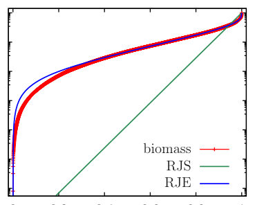
<figcaption class="paper-figure-caption"><b>Fig 1.</b> Figure 1. Comparison of mammal biomass Lorenz curve (red data curve) with the theoretical RJS model (green curve) and the RJE model at optimal parameter a = 7.034 (blue curve). The x-axis corresponds to the cumulated fraction of species (h) and the y-axis to the cumulated fraction of biomass (w). The dashed black line (only in left panel) corresponds to the line of perfect equipartition w = h. For both cases of RJS and RJE, the corresponding values of ε are determined such that the theoretical curves have the same Gini coefficient G = 0.944 as the red data curve. This gives εRJS = 0.0282 and εRJE = 7.57 × 10−4. The left panel shows the Lorenz curves in normal representation and the right...</figcaption>
</figure>
<figure class="paper-figure-card">
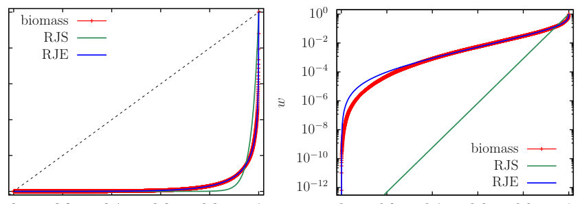
<figcaption class="paper-figure-caption"><b>Fig 2.</b> Fig. 2 compares the Pareto curves of the RJE model with the real data curve. It shows that the WTH approach describes very well the real biomass data in the range of 4 (10) orders of magnitude of variation of C(wm) (wm). The global dependence of the cumulated biomass w on the cumulated number of species h and the average rescaled total system energy ε is shown by color in Fig. 3 at fixed a = 7.034. The white line in this Fig. 3 shows the parameter value ε = 7.57 × 10−4 corresponding to the real biomass data. This Figure shows the existence of the huge phase of very light species corresponding to the phase of poor households in the problem of wealth inequality. Thus the bottom 50% of wild...</figcaption>
</figure>
<figure class="paper-figure-card">
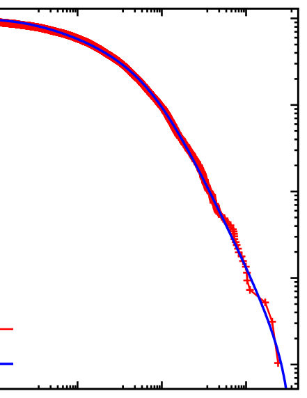
<figcaption class="paper-figure-caption"><b>Fig 3.</b> Figure 2. Pareto curves C(wm) for the same data of Fig. 1 (red data curve) where C(wm) represents the fraction of mammal species with a biomass larger than wm (analogous to wealth). The x-axis corresponds to rescaled values wm/⟨wm⟩where ⟨wm⟩= ws = 4.68 × 109g is the average species biomass. The blue curve corresponds to the theoretical RJE Pareto curve with same parameters as in Fig. 1 (a = 7.034 and εRJE = 7.57 × 10−4 = ⟨wm⟩). Note that for the theoretical RJE model, we have wm ∈[0, 1] (see text and [20] for details).</figcaption>
</figure>
<figure class="paper-figure-card">
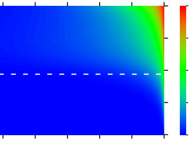
<figcaption class="paper-figure-caption"><b>Fig 4.</b> Figure 3. Color plot of cumulated wealth w from the Lorenz curves of the RJE model for the parameter a = 7.034. The x-axis corresponds to the fraction of households h ∈[0, 1] and the y-axis to the rescaled energy ε = E/B ∈[10−5, 10−1] in logarithmic representation. The values of the colorbar represent the cumulated wealth fraction w ∈[0, 1] at given values of h and ε. The white dashed line corresponds to the value εRJE = 7.57 × 10−4 used in Figs. 1 and 2 for the blue RJE curves (with the same value of a). Note that for a = 7.034 the critical energy value for the transition from positive to negative temperature is given by εC = 0.141 (slightly above 0.1) and that the color values along the...</figcaption>
</figure>
</div>

<p><strong>Summary.</strong> This paper applies advanced statistical mechanics tools, particularly the Wealth Thermalization Hypothesis, to analyze the biomass distribution of wild mammals. It finds the distribution exhibits extreme inequality, which is accurately modeled by an extended Rayleigh-Jeans spectral distribution. This suggests that the concentration of biomass among large species follows a universal statistical law, analogous to wealth concentration in human societies.</p>
<p><strong>Why it may be interesting.</strong> While the subject is biology/economics, the methodology relies heavily on applying concepts from statistical mechanics (RJ distribution, thermalization hypotheses) to model complex, non-equilibrium distributions, which is a general theoretical tool.</p>
<details>
<summary>Detailed structure</summary>
<p><strong>Main problem.</strong> The paper statistically analyzes the global biomass distribution of wild terrestrial mammals, drawing parallels with tools used to characterize wealth inequality.</p>
<p><strong>Main result.</strong> The biomass distribution exhibits extreme inequality, which is successfully modeled by an extended Rayleigh-Jeans (RJ) spectral model, suggesting a universal thermalization principle.</p>
<p><strong>Method.</strong> The analysis employs economic tools like the Lorenz curve and Gini coefficient, applying concepts from statistical mechanics, specifically the Wealth Thermalization Hypothesis (WTH) using RJ distributions.</p>
<p><strong>Model / system.</strong> The system is the biomass distribution of 4795 wild mammal species. The model uses the RJ steady-state distribution, comparing the data to theoretical curves derived from both RJS and RJE spectral models.</p>
<p><strong>Key observables.</strong> Gini coefficient (G=0.944), Lorenz curve, and Pareto curve describing biomass concentration.</p>
<p><strong>Important parameters / regimes.</strong> The model parameters include the temperature T and chemical potential $\mu$, leading to optimized parameters like $\epsilon_{	ext{RJE}} = 7.57 	imes 10^{-4}$.</p>
<p><strong>Assumptions / limitations.</strong> The core assumption is the analogy between biomass/energy and wealth/energy, suggesting that the observed distribution is a robust, mechanism-independent thermalization outcome.</p>
<p><strong>Figures summary.</strong> Figures compare the real Lorenz curve against theoretical curves derived from RJS and RJE models, demonstrating the fit across multiple orders of magnitude of biomass variation.</p>
<p><strong>Paper structure.</strong> The paper first introduces the statistical analysis using economic tools, then details the WTH framework and the RJ modeling, compares the theoretical models to the real mammal data, and finally discusses the implications for ecological mechanisms.</p>
</details>
<details>
<summary>Abstract</summary>
<p>Using the recently published global census of the biomass of wild terrestrial mammals, we perform a detailed mathematical statistical analysis of its distribution over $N_s=4795$ species, drawing on tools developed in economics to characterize wealth inequality. We show that the Lorenz curve of the mammal biomass distribution is characterized by a large Gini coefficient $G=0.944$ exceeding the inequality reported for wealth distribution among world countries. This distribution is compared to the predictions of the Wealth Thermalization Hypothesis (WTH), in which species biomass values are treated as energy levels populated according to a Rayleigh-Jeans (RJ) steady-state distribution. We show that an RJ extended spectral model reproduces the real Lorenz and Pareto curves over four orders of magnitude of biomass variation, capturing the strong condensation of biomass among the rare, heavy-bodied species and its near-absence among the vast majority of light-bodied ones. These results extend the WTH framework, previously validated on distributions of human economic origin, to a biological distribution shaped by ecological and evolutionary constraints, and place the extreme rarity of large-bodied mammal species within the same statistical mathematical description as the oligarchic concentration of wealth in human societies. We finally discuss possible ecological mechanisms that may contribute to the observed distribution, including interspecific interactions, food availability, and competition.</p>
</details>
<p><sub><a href="#top">↑ back to top</a></sub></p>

<p><a id="paper-2610.09796"></a></p>
<h3 id="mixed-states-in-quantum-rabin-oblivious-transfer"><a href="http://arxiv.org/abs/2610.09796v1">Mixed States in Quantum Rabin Oblivious Transfer</a></h3>
<p><strong>Authors:</strong> James T. Peat, Lara Stroh, Kenny Campbell, Erika Andersson<br>
<strong>Type:</strong> theory · <strong>Category:</strong> quantum information and computing · <strong>PDF:</strong> <a href="https://arxiv.org/pdf/2610.09796v1">https://arxiv.org/pdf/2610.09796v1</a><br>
<strong>Analysis basis:</strong> full PDF text, analyzed in chunks
<strong>Topic relevance:</strong> <code>quantum measurements</code> <strong>1/5</strong></p>
<div class="figure-strip-hint">↔ Scroll figures horizontally</div>
<div class="paper-figures-scroll">
<figure class="paper-figure-card">
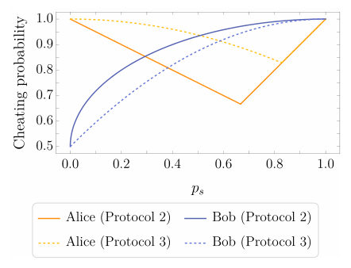
<figcaption class="paper-figure-caption"><b>Fig 1.</b> FIG. 1: Plot of Alice’s and Bob’s cheating probabilities, AOT and BOT, against success probability, ps, for the single-qubit pure-state protocol (Protocol 2) and extended two-qubit mixed-state protocol (Protocol 3).</figcaption>
</figure>
<figure class="paper-figure-card">
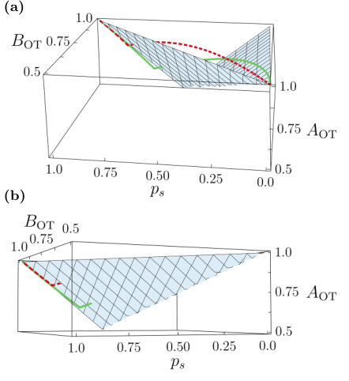
<figcaption class="paper-figure-caption"><b>Fig 2.</b> FIG. 2: Two views of a 3D graph of BOT vs ps vs AOT. The light blue surface is the classical strategy (Protocol 1). The lines are the quantum protocols: the solid green one for the single-qubit pure-state protocol (Protocol 2) and the dashed red one for the extended two-qubit mixed-state protocol (Protocol 3).</figcaption>
</figure>
<figure class="paper-figure-card">
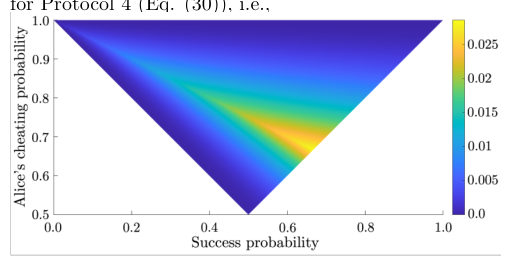
<figcaption class="paper-figure-caption"><b>Fig 3.</b> FIG. 4: The difference, ∆m,2 c = Bc OT −Bm,2 OT , between Bob’s cheating probability for Protocol 1 and Protocol 4 at various values of Alice’s cheating probability, AOT, and success probability, ps. Protocol 4, as defined in Section III B 1, is the mixed-state Rabin OT protocol based on the single-qubit pure-state protocol and Protocol 1 is the classical Rabin OT protocol, defined in Section II A. The colour spectrum indicates the value of ∆m,2 c .</figcaption>
</figure>
<figure class="paper-figure-card">
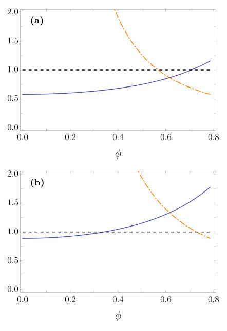
<figcaption class="paper-figure-caption"><b>Fig 4.</b> FIG. 3: Plot of r, Eq. (33), in orange (dash-dotted line) and f, Eq. (34), in blue (solid line) against ϕ for two different values of pm,2 s and Am,2 OT. (a) has the values pm,2 s = 0.55 and Am,2 OT = 0.6 whereas (b) has pm,2 s = 0.8 and Am,2 OT = 0.9.</figcaption>
</figure>
<figure class="paper-figure-card">
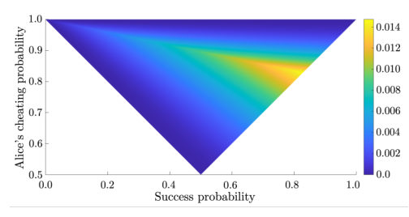
<figcaption class="paper-figure-caption"><b>Fig 5.</b> FIG. 5: The difference, ∆m,3 c = Bc OT −Bm,3 OT , between Bob’s cheating probability for Protocol 1 and Protocol 5 at various values of Alice’s cheating probability, AOT, and success probability, ps. Protocol 5, as defined in Section III B 2, is the mixed-state Rabin OT protocol based on the extended two-qubit mixed state protocol and Protocol 1 is the classical Rabin OT protocol. The colour spectrum indicates the value of ∆m,3 c .</figcaption>
</figure>
</div>

<p><strong>Summary.</strong> This paper analyzes the security of Rabin Oblivious Transfer by comparing classical, pure-state quantum, and novel mixed-state quantum protocols. The authors demonstrate that incorporating mixed quantum states generally enhances the security bounds of the OT protocol compared to using pure states alone. This advances the understanding of information-theoretically secure quantum primitives.</p>
<p><strong>Why it may be interesting.</strong> While focused on cryptography, the core techniques involve analyzing the robustness of quantum information protocols against eavesdropping and cheating, which relates to fundamental concepts in quantum channel capacity and security proofs.</p>
<details>
<summary>Detailed structure</summary>
<p><strong>Main problem.</strong> The paper investigates whether using mixed quantum states can improve the security and performance of Rabin Oblivious Transfer (OT) protocols compared to classical or pure-state quantum protocols.</p>
<p><strong>Main result.</strong> Mixed-state protocols are shown to generally outperform pure-state protocols across various parameters, achieving superior security compared to classical methods, especially for higher success probabilities.</p>
<p><strong>Method.</strong> The authors derive and compare cheating probabilities ($B_{OT}, A_{OT}$) for multiple protocols (pure-state, two-qubit mixed-state, single-qubit mixed-state) using quantum information theory tools.</p>
<p><strong>Model / system.</strong> The model is the Rabin Oblivious Transfer (OT) primitive, where a sender transmits a bit to a receiver who learns it probabilistically, while the sender remains ignorant of the outcome.</p>
<p><strong>Key observables.</strong> Bob's cheating probability ($B_{OT}$) and Alice's cheating probability ($A_{OT}$), plotted against the success probability ($p_s$).</p>
<p><strong>Important parameters / regimes.</strong> Success probability ($p_s$), angle parameters ($\phi$), and measurement parameters ($r, s$).</p>
<p><strong>Assumptions / limitations.</strong> The analysis assumes Alice has perfect memory; the comparison is based on monitoring probabilities rather than full-testing regimes.</p>
<p><strong>Figures summary.</strong> Figure 7 compares Bob's cheating probabilities for three protocols (pure-state, Protocol 4, Protocol 5) across varying success probabilities ($p_s$), showing performance crossovers between the protocols.</p>
<p><strong>Paper structure.</strong> The paper systematically compares the security bounds of classical, pure-state, and novel mixed-state protocols for Rabin OT, deriving specific cheating probability formulas for each case and comparing them graphically.</p>
</details>
<details>
<summary>Abstract</summary>
<p>Oblivious transfer (OT) is a fundamental cryptographic primitive that is useful for realizing any two-party computation. Since information-theoretically secure perfect OT is impossible classically and quantumly, research has focused on imperfect protocols, exploring how close to perfect one can get against unbounded dishonest parties. While current approaches often make use of pure quantum states, recent work suggests that mixed quantum states may improve performance. In this paper, we investigate the use of mixed quantum states in Rabin oblivious transfer, where a sender holds one bit and a receiver learns its value with a certain probability while the sender remains ignorant of whether the receiver learned it. We present three mixed-state protocols constructed with two distinct methods, extending an existing pure-state scheme and employing a probabilistic approach, and demonstrate improved performance compared to classical and quantum pure-state protocols across varying parameters.</p>
</details>
<p><sub><a href="#top">↑ back to top</a></sub></p>

<p><a id="paper-2610.09635"></a></p>
<h3 id="quantum-anomaly-detection-in-real-scarce-data"><a href="http://arxiv.org/abs/2610.09635v1">Quantum anomaly detection in real scarce data</a></h3>
<p><strong>Authors:</strong> Emanuele Casciaro, Fabio Mascherpa, Alfonso Amendola, Filippo Caruso<br>
<strong>Type:</strong> experiment · <strong>Category:</strong> other · <strong>PDF:</strong> <a href="https://arxiv.org/pdf/2610.09635v1">https://arxiv.org/pdf/2610.09635v1</a><br>
<strong>Analysis basis:</strong> full PDF text, analyzed in chunks
<strong>Topic relevance:</strong> <code>quantum measurements</code> <strong>1/5</strong></p>
<div class="figure-strip-hint">↔ Scroll figures horizontally</div>
<div class="paper-figures-scroll">
<figure class="paper-figure-card">
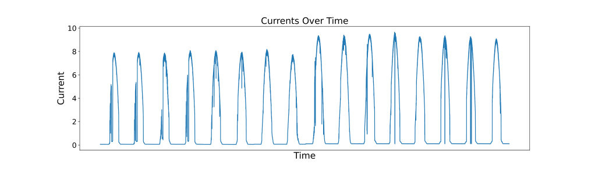
<figcaption class="paper-figure-caption"><b>Fig 1.</b> Figure 1. Current level of the first string of panels sampled over the course of the experiments. The peaks represent daytime activity, while the inactive regions are associated with nighttime.</figcaption>
</figure>
<figure class="paper-figure-card">
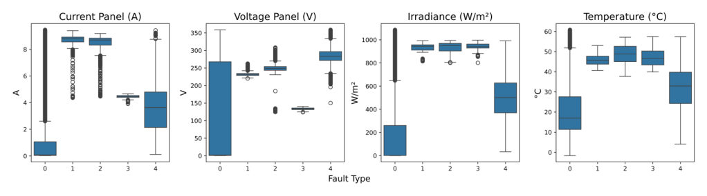
<figcaption class="paper-figure-caption"><b>Fig 2.</b> Figure 2. Per-class feature distribution: due to the sane data being distributed all over the feature space, it is difficult to correctly identify the different types of fault instances.</figcaption>
</figure>
<figure class="paper-figure-card">
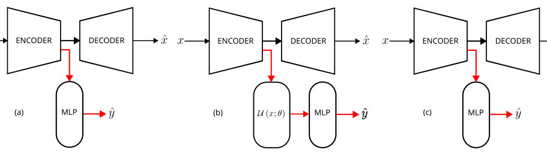
<figcaption class="paper-figure-caption"><b>Fig 3.</b> Figure 3. Different hybrid interactions analyzed: no interactions (left) is compared against a hybrid model where the quantum layer is employed only at the classification level (ours, center), or from the beginning of the training (right). The black and red lines represent the flow of the input during the first and second training phase.</figcaption>
</figure>
<figure class="paper-figure-card">
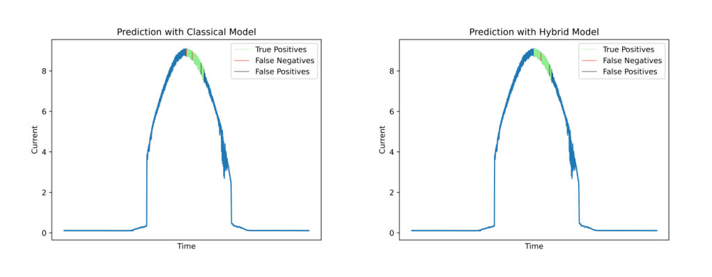
<figcaption class="paper-figure-caption"><b>Fig 4.</b> Figure 4. Anomaly detection over the last day of sampling. Both classic (left) and hybrid model (right) perform well, with the hybrid model avoiding some misclassification at the start of the sequence.</figcaption>
</figure>
<figure class="paper-figure-card">
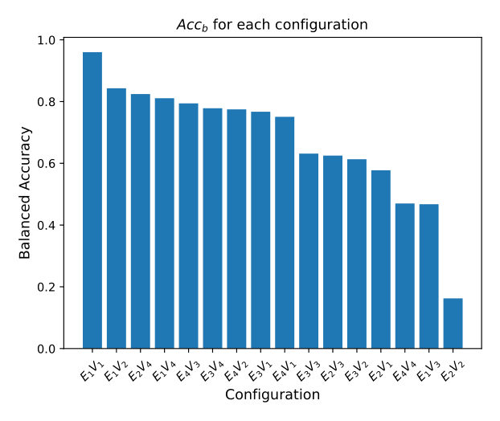
<figcaption class="paper-figure-caption"><b>Fig 5.</b> Figure 5. Accb of each configuration of ansatz construction: without changing the measurement of the circuit (in our case ⟨Zi⟩), the family of states |ψ(x;θ)⟩associated with the circuit can have a great impact on the output of the layer, affecting the classification performances.</figcaption>
</figure>
</div>

<p><strong>Summary.</strong> This work proposes a hybrid quantum-classical machine learning framework to perform anomaly detection on scarce, time-series data from solar power plants. By integrating a Transformer autoencoder with a Quantum Neural Network, the model aims to overcome the limitations of classical methods in handling data imbalance and model complexity. The results show that this hybrid approach maintains high accuracy while drastically reducing the model's trainable parameters.</p>
<p><strong>Why it may be interesting.</strong> While the application is in energy systems, the core methodology involves mapping classical time-series features into a quantum state space for classification, which touches upon quantum feature mapping techniques relevant to quantum information processing.</p>
<details>
<summary>Detailed structure</summary>
<p><strong>Main problem.</strong> The paper addresses the challenge of anomaly detection on small, highly unbalanced datasets, particularly in time-series data from critical infrastructure.</p>
<p><strong>Main result.</strong> The proposed two-step hybrid classical-quantum architecture achieves competitive prediction accuracy while demonstrating significant parameter efficiency compared to purely classical or fully quantum approaches.</p>
<p><strong>Method.</strong> A novel hybrid model is proposed, combining a classical Transformer-based autoencoder for feature extraction with a Quantum Neural Network (QNN) for final classification.</p>
<p><strong>Model / system.</strong> The system is simulated using data from a large-scale photovoltaic (PV) power plant undergoing various artificially induced hardware failures (e.g., short circuit, degradation).</p>
<p><strong>Key observables.</strong> Balanced Accuracy (Acc_b), F1 Score, and the number of trainable parameters (#Parameters) are key metrics used for comparison.</p>
<p><strong>Important parameters / regimes.</strong> The simulation spans 16 days with a 1 Hz sampling rate, and the quantum circuit depth (R) and connectivity are important design choices.</p>
<p><strong>Assumptions / limitations.</strong> The primary assumption is that quantum machine learning can provide a more sustainable and interpretable alternative to classical deep learning models for scarce data.</p>
<p><strong>Figures summary.</strong> Figures illustrate the PV plant's current levels over time, the feature distribution of different fault types, and the comparison of performance metrics ($    ext{Acc}_b$) across different hybrid ansatz constructions.</p>
<p><strong>Paper structure.</strong> The paper follows a structure of identifying the AD challenge, proposing the hybrid architecture (AE $ o$ QNN), detailing the training process (MSE loss followed by weighted cross-entropy loss), and finally benchmarking performance against classical baselines.</p>
</details>
<details>
<summary>Abstract</summary>
<p>Anomaly detection on small and unbalanced datasets remains very challenging in machine learning, although this scenario is common in several domains, including healthcare, cybersecurity, finance, and energy. Data augmentation and generative AI may mitigate training-data scarcity, but they often fall short because anomalies are, by definition, unpredictable, rare, and highly diverse events compared to high-probability normal data. Overfitting to pseudo-anomalies, model collapse, high-dimensional data, uninterpretable black-box models, and validation challenges are typical issues limiting their practical applicability. In this context, quantum machine learning may provide a promising and more sustainable avenue because it can enable more interpretable models with far fewer trainable parameters and smaller datasets, implementable on energy-efficient quantum hardware. Here, we propose a novel two-step hybrid classical--quantum architecture for sequential data and test it on a realistic scenario in the global energy-transition domain, i.e., automated anomaly detection in large-scale photovoltaic plants. The achieved generalization capability and competitive prediction accuracy may pave the way for new hybrid learning models able to exploit the continuously increasing power of cloud-available and more sustainable quantum accelerators integrated with more traditional energy-hungry High Performance Computing resources.</p>
</details>
<p><sub><a href="#top">↑ back to top</a></sub></p>

<p><a id="paper-2610.08934"></a></p>
<h3 id="remote-magnon-sensing-detects-the-universal-phase-stiffness-jump-in-bimath668mathsrmath669mathcacumath670mathomath671math"><a href="http://arxiv.org/abs/2610.08934v1">Remote magnon sensing detects the universal phase stiffness jump in Bi$_2$Sr$_2$CaCu$_2$O$_{8+δ}$</a></h3>
<p><strong>Authors:</strong> Yue Sun, Mai Nguyen, Naiyuan James Zhang, Dingbin Huang, Shuai Yuan, Aljoscha Söll, Arun Ramanathan, Takashi Taniguchi, Kenji Watanabe, Xavier Roy, Zdeněk Sofer, Shigeyuki Ishida, Hiroshi Eisaki, Makoto Hashimoto, Zhi-Xun Shen, Joseph Orenstein, Xiaodong Xu<br>
<strong>Type:</strong> experiment · <strong>Category:</strong> strongly correlated electrons · <strong>PDF:</strong> <a href="https://arxiv.org/pdf/2610.08934v1">https://arxiv.org/pdf/2610.08934v1</a><br>
<strong>Analysis basis:</strong> full PDF text, analyzed in chunks
<strong>Topic relevance:</strong> <code>quantum measurements</code> <strong>1/5</strong></p>
<div class="figure-strip-hint">↔ Scroll figures horizontally</div>
<div class="paper-figures-scroll">
<figure class="paper-figure-card">
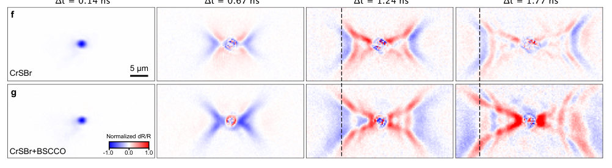
<figcaption class="paper-figure-caption"><b>Fig 1.</b> Figure 1. Accelerated magnon propagation in a CrSBr/BSCCO heterostructure. a, Optical image of the CrSBr/BSCCO heterostructure. The 187 nm thick underdoped BSCCO flake has its Tc at 62 K. The CrSBr flake is 385 nm thick. b, Schematic of the experimental setup. A pump and probe foci are spatially separated to probe the propagation of magnons on CrSBr/BSCCO heterostructure. c,d, Transient reflectance measured for pump–probe separations ranging from 0.0 to 16.5 µm in (c) the heterostructure and (d) the bare CrSBr flake. e, Extraction of magnon group velocity vg in both CrSBr/BSCCO and bare CrSBr flake. f,g, Snapshots of spatially resolved transient reflectance measured on (f) bare CrSBr flake...</figcaption>
</figure>
<figure class="paper-figure-card">
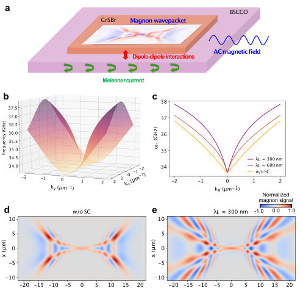
<figcaption class="paper-figure-caption"><b>Fig 2.</b> Figure 3. Magnon dispersion in antiferromag- net/superconductor heterostructures. a, Cartoon illus- trating the magnetic dipolar coupling between magnons in the antiferromagnet and Meissner currents in the supercon- ductor. b, Calculated magnon frequency of the ω+ mode as a function of wavevector in the kx-ky plane. c, Magnon disper- sion of the ω+ mode along the ky direction for different values of λL. d,e, Simulated spatial distribution of the ω+ magnon mode at ∆t = 1.77 ns (d) in a bare CrSBr flake (thickness = 385 nm) and (e) in a CrSBr/superconductor heterostructure with λL = 300 nm.</figcaption>
</figure>
<figure class="paper-figure-card">
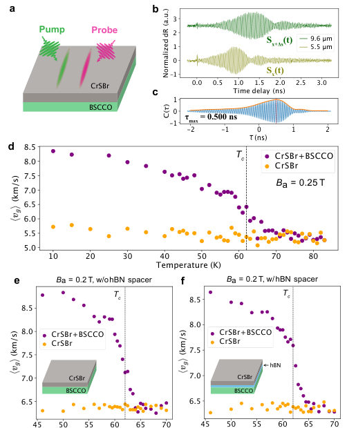
<figcaption class="paper-figure-caption"><b>Fig 3.</b> Figure 2. Correlation between vg enhancement and su- perconductivity. a, Schematic of the experimental setup with stripe-shaped pump and probe beams. b, Example tran- sient reflectance data measured for pump–probe separations at 5.50 and 9.63 µm in CrSBr/BSCCO. c, The correlation function C(τ) calculated from the data in (b). The envelope of C(τ) peaks at τ = 0.500 ns. d, Temperature dependence of vg measured on both CrSBr/BSCCO and the CrSBr bare flake under an in-plane magnetic field of 0.25 T. e,f, Comparison between the temperature dependence of vg on CrSBr/BSCCO samples (e) without and (f) with a hBN spacer. Insets show the sample geometry.</figcaption>
</figure>
<figure class="paper-figure-card">
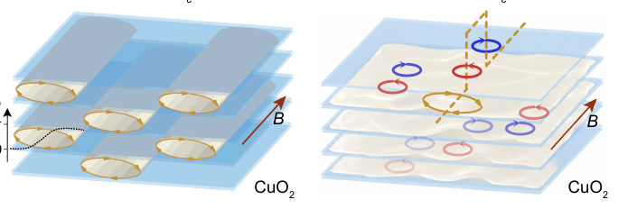
<figcaption class="paper-figure-caption"><b>Fig 4.</b> Figure 4. Observation of a parallel-field-induced BKT transition. a, Temperature dependence of the averaged magnon group velocity ⟨vg⟩in CrSBr/BSCCO under in-plane magnetic fields ranging from 0.150 to 0.400 T. The magnetic field is applied along the a-axis of CrSBr. b, Extracted phase stiffness ρs as a function of temperature. The dashed line indicates the magnitude of the universal jump predicted by the BKT theory. c,d, Temperature dependence of ⟨vg⟩and extracted ρs in the CrSBr/BSCCO device separated by an hBN spacer, demonstrating the reproducibility of the field-induced transition and the universal jump in ρs. e, Schematic illustration of the Josephson vortex lattice below the critical...</figcaption>
</figure>
</div>

<p><strong>Summary.</strong> The researchers developed a method using magnons in a $    ext{CrSBr}$ sensor to remotely measure the phase stiffness of superconducting cuprates ($   ext{BSCCO}$). By observing the enhancement of the magnon group velocity upon coupling to the superconductor, they quantitatively mapped the superconducting phase stiffness and detected the universal jump characteristic of the Berezinskii-Kosterlitz-Thouless transition.</p>
<p><strong>Why it may be interesting.</strong> This work provides a novel, non-invasive optical probe for measuring fundamental superconducting parameters like phase stiffness, linking magnon physics directly to high-temperature superconductivity phenomena.</p>
<details>
<summary>Detailed structure</summary>
<p><strong>Main problem.</strong> To develop a local, contactless, and all-optical measurement technique for superconducting phase stiffness ($
ho_s$) and to study the evolution of superconducting phase coherence, particularly observing the Berezinskii–Kosterlitz–Thouless (BKT) transition in cuprates.</p>
<p><strong>Main result.</strong> The study successfully identified a parallel-field-induced Berezinskii-Kosterlitz-Thouless transition in bulk cuprates by observing the universal phase-stiffness jump using remote magnon sensing.</p>
<p><strong>Method.</strong> The technique uses propagating antiferromagnetic magnons in a $ ext{CrSBr}$ sensor interfaced with a superconductor ($  ext{BSCCO}$) to remotely probe superconducting electrodynamics by measuring the magnon group velocity enhancement.</p>
<p><strong>Model / system.</strong> The system involves a $ ext{CrSBr}/ ext{BSCCO}$ heterostructure where the magnon group velocity is enhanced due to the induction of local Meissner screening currents in the superconductor. The phase stiffness ($
ho_s$) is quantitatively extracted from this enhanced magnon group velocity.</p>
<p><strong>Key observables.</strong> Magnon group velocity ($\langle v_g 
angle$), Superfluid stiffness ($
ho_s$), BKT transition jump.</p>
<p><strong>Important parameters / regimes.</strong> Underdoped $    ext{Bi}<em 8_delta="8+\delta">2   ext{Sr}_2   ext{CaCu}_2 ext{O}</em>$, magnetic field ($B_\parallel$), temperature ($T$).</p>
<p><strong>Assumptions / limitations.</strong> The enhancement of $\langle v_g 
angle$ is directly proportional to the superconducting phase stiffness ($
ho_s$) via the London penetration depth ($\lambda_L$).</p>
<p><strong>Figures summary.</strong> Figure 1 shows the enhanced magnon group velocity in $ ext{CrSBr}/ ext{BSCCO}$ compared to bare $  ext{CrSBr}$. Figure 2 illustrates the temperature dependence of this enhancement, used to map out $
ho_s(T)$.</p>
<p><strong>Paper structure.</strong> The paper establishes the theoretical link between magnon dynamics and superconducting electrodynamics, details the all-optical measurement protocol using magnon wavepackets, and applies this method to observe the field-induced BKT transition in cuprates.</p>
</details>
<details>
<summary>Abstract</summary>
<p>Phase stiffness governs macroscopic quantum coherence in superfluids and superconductors, providing a sensitive probe of condensate depletion, fluctuations, and phase transitions. However quantitative and spatially resolved measurements remain challenging. Here we report a contactless, local, all-optical measurement of superconducting phase stiffness using propagating antiferromagnetic magnons as remote sensors. In CrSBr, strong exciton-magnon coupling enables optical excitation and detection of magnon wavepackets and precise determination of their group velocity. When CrSBr is interfaced with underdoped Bi$_2$Sr$_2$CaCu$_2$O$_{8+δ}$, we find that the magnon group velocity is substantially enhanced below the superconducting transition and quantitatively encodes the phase stiffness through Meissner screening currents. Using this capability, we identify a parallel-field-induced Berezinskii-Kosterlitz-Thouless transition through direct observation of the universal phase-stiffness jump, revealing a field-controlled route to expose intrinsic two-dimensional phase-ordering physics in a bulk cuprate. Our work establishes propagating magnons as local probes of superconducting electrodynamics and phase-coherent phenomena in low-dimensional quantum materials.</p>
</details>
<p><sub><a href="#top">↑ back to top</a></sub></p>

<p><a id="paper-2610.09815"></a></p>
<h3 id="singlet-sector-of-the-vector-model-with-angular-potential"><a href="http://arxiv.org/abs/2610.09815v1">Singlet sector of the vector model with angular potential</a></h3>
<p><strong>Authors:</strong> Srijan Kumar<br>
<strong>Type:</strong> theory · <strong>Category:</strong> statistical mechanics · <strong>PDF:</strong> <a href="https://arxiv.org/pdf/2610.09815v1">https://arxiv.org/pdf/2610.09815v1</a><br>
<strong>Analysis basis:</strong> full PDF text, analyzed in chunks
<strong>Topic relevance:</strong> <code>Keldysh / 2PI / non-Gaussian methods</code> <strong>1/5</strong></p>
<div class="figure-strip-hint">↔ Scroll figures horizontally</div>
<div class="paper-figures-scroll">
<figure class="paper-figure-card">
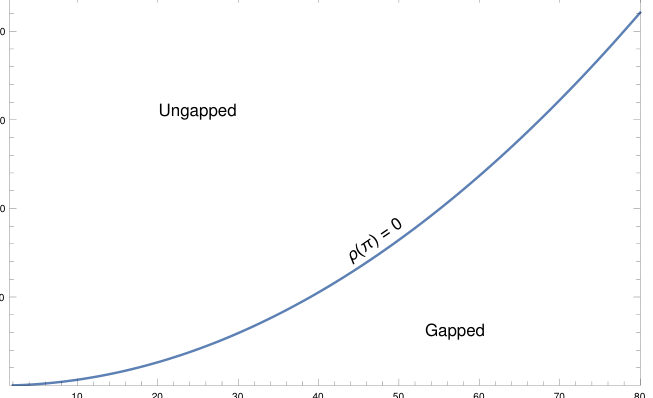
<figcaption class="paper-figure-caption"><b>Fig 1.</b> Figure 1. Large-N free-theory Gross–Witten–Wadia phase boundary at fixed Tr and N(1 −ω2). Here ρ(α) is the holonomy eigenvalue density. The curve, defined by ρ(π) = 0, uses the leading term of equation (1.3) with the sum truncated at n = 5000. The regions above and below the curve are ungapped and gapped, respectively. The figure is used as an illustration of the large N result and should not be interpreted as a finite-N calculation.</figcaption>
</figure>
</div>

<p><strong>Summary.</strong> This paper analyzes the phase transitions of a large-N O(N) vector model on a sphere with an added angular potential. Using advanced techniques like the large-N limit and saddle-point approximation, the authors determine the critical conditions for the Gross-Witten-Wadia transition. The work shows how the potential tunes this transition and reveals non-trivial features in the free energy near the critical points.</p>
<p><strong>Why it may be interesting.</strong> The study of phase transitions in complex field theories, especially those involving geometric constraints (like the singlet sector) and external potentials, provides deep insights into critical phenomena relevant to condensed matter systems.</p>
<details>
<summary>Detailed structure</summary>
<p><strong>Main problem.</strong> The study investigates the singlet sector of the large-N, O(N) vector model subjected to an angular potential $\Omega$. The core goal is to analyze the phase transitions occurring in this system.</p>
<p><strong>Main result.</strong> The angular potential modifies the Gross-Witten-Wadia transition, allowing it to occur even at fixed temperature. The free energy exhibits a double pole in the ungapped phase, suggesting non-local physics.</p>
<p><strong>Method.</strong> The analysis employs the large-N limit, utilizing Hubbard-Stratonovich transformations and saddle-point approximations to evaluate the free energy and determine critical lines.</p>
<p><strong>Model / system.</strong> The model is the O(N) vector model defined on $S^1 	imes S^2_r$, restricted to its singlet sector by averaging over the O(N) holonomy. The Hamiltonian includes a term proportional to the angular potential $\Omega$.</p>
<p><strong>Key observables.</strong> Free energy ($\log Z_{	ext{sing}}$), critical temperature ($T_{	ext{cr}}$), and the holonomy eigenvalue distribution.</p>
<p><strong>Important parameters / regimes.</strong> Temperature ($T$), angular potential ($\Omega$), radius of $S^2$ ($r$), and the large-N limit ($N$).</p>
<p><strong>Assumptions / limitations.</strong> The calculations rely on the large-N limit and the saddle-point approximation for evaluating the partition function integral.</p>
<p><strong>Figures summary.</strong> Figure 1 illustrates the large-N free-theory GW-W phase boundary in the $T_r - N(\dots)$ plane.</p>
<p><strong>Paper structure.</strong> The paper proceeds by defining the system and implementing the singlet projection. It then calculates the free energy at both fixed points, derives the critical transition condition, and analyzes the effect of the angular potential and subleading corrections.</p>
</details>
<details>
<summary>Abstract</summary>
<p>We study the singlet sector of large-$N$, $O(N)$ vector model on $S^1_β\times S^2_r$ in presence of an angular potential $Ω$. We compute the free energy of the model both at the free fixed point as well as the non-trivial fixed point. The model undergoes a phase transition when the temperature $T$ and angular potential attain the relation $T^2r^2\sim N (1-ω^2)$, where $ω=rΩ$ and $r$ is the radius of $S^2$, with $Tr\gg1$, at both the fixed points, with different numerical coefficients. The transition was studied earlier at zero angular potential at $Tr\sim \sqrt{N}$. The holonomy eigenvalue distribution, having support on the full circle below the transition, develops a gap above it, called the Gross-Witten-Wadia transition. The angular potential introduces an additional parameter to such a transition, tuning it, the transition can occur even at a fixed temperature. We show that for the free model transition can occur as $1-ω^2\sim 1/N$ while $Tr\sim O(1)$. For the interacting model the computation is performed at a limit $Tr\gg1$, thus we show the same at a large but fixed temperature which does not scale as $\sqrt{N}$. In the ungapped phase, the free energy exhibits a double pole near $ω^2=1$ for both the fixed points. This is possibly due to the fact that the theory projected onto the singlets is non-local and therefore need not obey the leading simple pole scaling of a local thermal effective action.</p>
</details>
<p><sub><a href="#top">↑ back to top</a></sub></p>

<p><a id="paper-2610.09698"></a></p>
<h3 id="spurious-zero-dispersion-continua-in-full-math708math-positivity-a-linear-hierarchy-depth-lower-bound-from-an-exactly-solvable-counting-operator"><a href="http://arxiv.org/abs/2610.09698v1">Spurious zero-dispersion continua in full $(2,q)$-positivity: A linear hierarchy-depth lower bound from an exactly solvable counting operator</a></h3>
<p><strong>Authors:</strong> Maho Nakata<br>
<strong>Type:</strong> theory · <strong>Category:</strong> strongly correlated electrons · <strong>PDF:</strong> <a href="https://arxiv.org/pdf/2610.09698v1">https://arxiv.org/pdf/2610.09698v1</a><br>
<strong>Analysis basis:</strong> full PDF text, analyzed in chunks
<strong>Topic relevance:</strong> <code>Keldysh / 2PI / non-Gaussian methods</code> <strong>1/5</strong></p>
<div class="figure-strip-hint">↔ Scroll figures horizontally</div>
<div class="paper-figures-scroll">
<figure class="paper-figure-card">
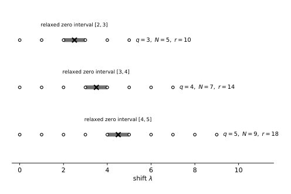
<figcaption class="paper-figure-caption"><b>Fig 1.</b> FIG. 1. Explicit false continua for full (2, 3)-, (2, 4)-, and (2, 5)-positivity. Open circles mark the exact integer spectrum; the thick segment is the relaxed zero interval; and the cross marks the half-integer midpoint, where the exact dispersion is 1/4 and the relaxed value is zero.</figcaption>
</figure>
<figure class="paper-figure-card">
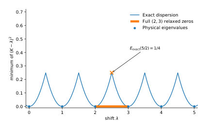
<figcaption class="paper-figure-caption"><b>Fig 2.</b> FIG. 2. Minimal full-three-positivity failure. The exact dis- persion energy is the squared distance to the integer spectrum. Full order-three positivity has zero energy at every point of [2, 3], including λ = 5/2, where the exact value is 1/4.</figcaption>
</figure>
<figure class="paper-figure-card">
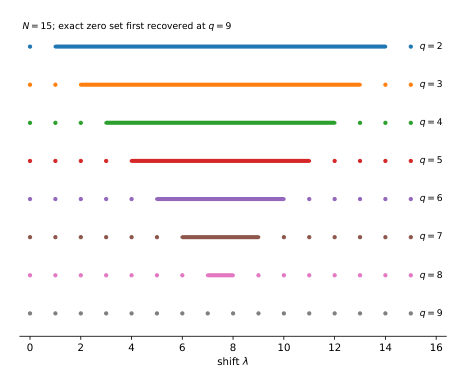
<figcaption class="paper-figure-caption"><b>Fig 3.</b> FIG. 3. Zero sets from Theorem 2 for N = 15. Increasing q recovers integer spectral points from the two edges, while a central false continuum remains until the linear threshold q = 9 of Eq. (44), where the zero set equals the spectrum.</figcaption>
</figure>
</div>

<p><strong>Summary.</strong> This theoretical paper analyzes the mathematical constraints imposed on many-fermion systems when using approximate reduced density matrices. It shows that imposing positivity constraints up to a fixed level $q$ can incorrectly predict the existence of noninteger eigenvalues (spurious continua) for certain operators. The work provides an exact threshold for when these approximations fail, guiding the development of more robust theoretical methods for strongly correlated materials.</p>
<p><strong>Why it may be interesting.</strong> The rigorous mathematical treatment of N-representability constraints and the identification of systematic failure modes (spurious continua) are crucial for developing reliable theoretical tools for strongly correlated electron systems.</p>
<details>
<summary>Detailed structure</summary>
<p><strong>Main problem.</strong> The paper investigates the spurious zero-dispersion continua that can arise when approximating the spectrum of many-fermion systems using variational reduced density matrices (RDMs) subject to semidefinite constraints.</p>
<p><strong>Main result.</strong> It determines the exact set of accepted eigenvalues for a solvable counting operator at every level of the full hierarchy of particle-hole constraints, showing that false noninteger eigenvalues appear unless the constraint level grows linearly with particle number.</p>
<p><strong>Method.</strong> The analysis employs the 'dispersion test' on an exactly solvable counting operator, constructing pseudo reduced density matrices by analytically continuing occupation probabilities to noninteger particle numbers.</p>
<p><strong>Model / system.</strong> The study concerns fermionic many-body systems, using the framework of reduced density matrices and imposing constraints derived from full $(2, q)$-positivity conditions.</p>
<p><strong>Key observables.</strong> The set of accepted eigenvalues for the counting operator, the minimized dispersion, and the occupation-correlation matrices.</p>
<p><strong>Important parameters / regimes.</strong> The hierarchy level $q$ (positivity order), the particle number $N$, and the orbital basis size $r$.</p>
<p><strong>Assumptions / limitations.</strong> The analysis assumes the validity of the full hierarchy of semidefinite constraints and relies on constructing pseudo-reduced density matrices via signed interpolation.</p>
<p><strong>Figures summary.</strong> Not specified.</p>
<p><strong>Paper structure.</strong> The paper systematically analyzes the constraints imposed by full $(2, q)$-positivity, establishing equivalences between polar and full formulations, and then applies this framework to a solvable counting model to pinpoint the exact spectrum and the conditions under which spurious eigenvalues appear.</p>
</details>
<details>
<summary>Abstract</summary>
<p>Variational two-particle reduced-density-matrix methods impose hierarchies of semidefinite constraints. We ask whether a fixed level of such a hierarchy can recover even an elementary many-fermion spectrum, using   the dispersion test, in which a value is accepted as an eigenvalue when the minimized dispersion vanishes. For an exactly solvable operator that counts fermions in one half of the spin orbitals, whose spectrum   consists of integers, we determine the complete set of accepted values at every level of the full hierarchy of particle-hole semidefinite constraints. Besides the integers, this set contains an entire interval of   noninteger values unless the hierarchy level grows linearly with the particle number, and we give the exact threshold. The proof constructs explicit pseudo reduced density matrices that are diagonal in the   occupation basis, obtained by continuing the occupation probabilities of a fixed-particle-number state to a noninteger particle number. Classical semidefinite constraints on occupation correlations, supplemented by   nonnegative occupation-pattern probabilities, suffice to establish fermionic positivity. For this counting model the two relaxations have the same dispersion zero set, not necessarily the same feasible states, and a   converse argument shows that no other false eigenvalues occur. The limitation is specific to the hierarchy: two-body inequalities that encode the integer spectrum would remove every false value but are not generated   at a fixed level. We also verify that the full semidefinite constraints and their complete projection onto two-particle reduced-density-matrix space are equivalent in finite dimensions, so that the result applies   equally to the polar formulation.</p>
</details>
<p><sub><a href="#top">↑ back to top</a></sub></p>

<p><a id="paper-2610.09931"></a></p>
<h3 id="sufficient-quantum-provenance-retained-fields-and-certified-recording-precision"><a href="http://arxiv.org/abs/2610.09931v1">Sufficient quantum provenance: retained fields and certified recording precision</a></h3>
<p><strong>Authors:</strong> George Kourousias, Sergio Carrato, Roberto Pugliese, Aljoša Hafner, Francesco Guzzi, Matteo Billè, Fulvio Billè, Panagiotis Dimitrakis<br>
<strong>Type:</strong> both · <strong>Category:</strong> quantum information and computing · <strong>PDF:</strong> <a href="https://arxiv.org/pdf/2610.09931v1">https://arxiv.org/pdf/2610.09931v1</a><br>
<strong>Analysis basis:</strong> full PDF text, analyzed in chunks
<strong>Topic relevance:</strong> <code>quantum measurements</code> <strong>1/5</strong></p>
<div class="figure-strip-hint">↔ Scroll figures horizontally</div>
<div class="paper-figures-scroll">
<figure class="paper-figure-card">
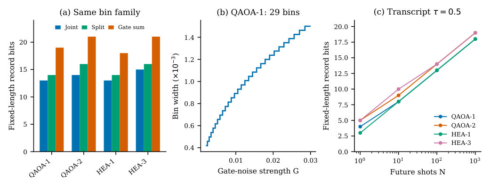
<figcaption class="paper-figure-caption"><b>Fig 1.</b> FIG. 1. Constructive recording budgets from channel structure. (a) Fixed-length record bits at single-shot tolerance 0.05 for the joint certificate, separate stochastic/coherent composition, and a gatewise sum, with all three using the same bin family. (b) QAOA-1 gate-noise bin widths increase with G under equal intervals in arcsin √</figcaption>
</figure>
<figure class="paper-figure-card">

<figcaption class="paper-figure-caption"><b>Fig 2.</b> FIG. 2. Retention policies evaluated against the guarantee they are intended to support. Each panel shows the achieved record-cell diameter RΩ(S) for the reference-mixture rule, singleton-threshold rule, and exhaustive minimum-cost sufficient set over the five declared tolerances. The shaded region marks RΩ(S) ≤ε; points above it violate their nominal tolerance. The annotated QAOA-1 case at ε = 0.05 is the compositional failure discussed in the text: the singleton rule attains 0.0514 although routing and angle bias each pass the one-field omission check separately. Values are from the complete baseline sweep in the electronic dataset; all minimum-cost curves use the residual-risk tie-break....</figcaption>
</figure>
</div>

<p><strong>Summary.</strong> This paper develops a formal framework to quantify 'sufficient quantum provenance,' determining the minimum amount of execution data needed to guarantee that two quantum computations yield results within a specified error tolerance. By using metrics like the Hellinger distance, the authors provide concrete bit-level requirements for recording noise and rotation details. This work is vital for establishing trust and comparability in the emerging field of quantum computation.</p>
<p><strong>Why it may be interesting.</strong> It provides a rigorous, quantifiable framework for certifying quantum computation results, which is crucial for building trustworthy quantum algorithms and comparing results across different hardware platforms.</p>
<details>
<summary>Detailed structure</summary>
<p><strong>Main problem.</strong> The paper addresses how to determine the minimal set of execution details (provenance fields) and the required recording precision necessary to certify that two quantum computations yield outcome laws close enough within a specified tolerance.</p>
<p><strong>Main result.</strong> It derives a joint stochastic–coherent certificate that bounds the Hellinger distance, showing that for a specific QAOA instance, a 13-bit record guarantees the required precision.</p>
<p><strong>Method.</strong> The authors use information-theoretic techniques, framing the problem as finding a minimum-cost sufficient set of fields to bound the worst-case Hellinger distance between outcome laws.</p>
<p><strong>Model / system.</strong> The work analyzes quantum computations, specifically using examples like QAOA, executed on quantum channels. The comparison is quantified using the Hellinger distance between outcome probability distributions.</p>
<p><strong>Key observables.</strong> Hellinger distance ($H(p, q)$), latent noise flags, conditional quantum fidelity, and the required number of bits for the comparison record.</p>
<p><strong>Important parameters / regimes.</strong> Tolerance ($\epsilon$, e.g., 0.05), circuit depth, number of qubits (e.g., four-qubit QAOA), and the cost associated with retaining different provenance fields.</p>
<p><strong>Assumptions / limitations.</strong> The hardware conclusions are conditional on stationary independent shots and are distinct from the analytic channel certificate. The record only guarantees agreement within tolerance, not absolute equivalence.</p>
<p><strong>Figures summary.</strong> The notes mention tables comparing analytically sufficient precision (record bits) for various QAOA and HEA instances across different certificate types, and a figure illustrating constructive recording budgets.</p>
<p><strong>Paper structure.</strong> The paper progresses from defining the general problem of sufficient provenance to deriving a joint certificate for continuous precision, providing concrete results for QAOA, and concluding with hardware-specific minimum label counts for finite context classes.</p>
</details>
<details>
<summary>Abstract</summary>
<p>Which execution details must a quantum computation retain, and to what precision, to support a declared comparison? We define a sufficient record by the largest Hellinger distance between outcome laws that share it. Our main result is a circuit-derived certificate for continuous recording precision: independent channel-mixture probabilities enter through the affinity of latent noise flags, while coherent rotation differences enter through conditional quantum fidelity. Their joint composition bounds whole record cells without simulating their outcome distributions. For four-qubit QAOA at depth one, a 13-bit comparison record guarantees distance below 0.05 throughout a declared continuous noise box, uniformly over programmed angles when comparisons hold the logical task fixed. A construction with observable noise flags attains the general bound. Exact tensorization of Hellinger affinity connects recording precision to the length of a future measurement transcript. On finite context classes, separation witnesses certify minimum-cost field retention; a four-field record is the unique minimum for 28 archived QAOA instances. Fresh six-qubit processor measurements establish different minimum label counts at one common tolerance: two labels are necessary and sufficient for raw laws, while one suffices after a fixed decoder for a synthetic image-segmentation task. These hardware conclusions are conditional on stationary independent shots and remain distinct from the analytic channel certificate. Shared task definitions and evidential archives are retained separately. The framework specifies which execution distinctions matter, how precisely to record them, and what evidence supports the resulting agreement guarantee.</p>
</details>
<p><sub><a href="#top">↑ back to top</a></sub></p>

<p><a id="paper-2610.09485"></a></p>
<h3 id="the-geometry-of-lee-yang-tensors"><a href="http://arxiv.org/abs/2610.09485v1">The Geometry of Lee-Yang Tensors</a></h3>
<p><strong>Authors:</strong> Jake Hofgard<br>
<strong>Type:</strong> theory · <strong>Category:</strong> statistical mechanics · <strong>PDF:</strong> <a href="https://arxiv.org/pdf/2610.09485v1">https://arxiv.org/pdf/2610.09485v1</a><br>
<strong>Analysis basis:</strong> full PDF text, analyzed in chunks
<strong>Topic relevance:</strong> <code>analog quantum simulation</code> <strong>1/5</strong></p>
<div class="figure-strip-hint">↔ Scroll figures horizontally</div>
<div class="paper-figures-scroll">
<figure class="paper-figure-card">

<figcaption class="paper-figure-caption"><b>Fig 1.</b> Figure 1: The roots of the univariate polynomial Fexp(−βH)(s, . . . , s) for a k-local Hamiltonian of the form H = I −|ψ⟩⟨ψ|, where |ψ⟩= |0⟩⊗k. For k = 2, the resulting Hamiltonian is Suzuki-Fisher and hence its roots avoid the interior of the unit disk, but for all k ≥3, roots shatter symmetrically from s = i for sufficiently small β &gt; 0, ensuring that at least one enters the interior of the disk.</figcaption>
</figure>
</div>

<p><strong>Summary.</strong> This work develops a geometric understanding of Lee-Yang tensors to analyze the spectral properties of quantum Hamiltonians. It establishes a local-to-global principle for bounding spectral gaps in specific Hamiltonians, most notably the Suzuki-Fisher class. The research provides a rigorous characterization of these Hamiltonians based on the persistence of their Lee-Yang radius across all inverse temperatures.</p>
<p><strong>Why it may be interesting.</strong> The connection between spectral properties (gaps) and analytic properties (Lee-Yang radius) provides a powerful, non-standard diagnostic tool for understanding quantum phase transitions and the stability of ground states in interacting quantum systems.</p>
<details>
<summary>Detailed structure</summary>
<p><strong>Main problem.</strong> The paper aims to provide a geometric description of Lee-Yang tensors and use this framework to establish powerful local-to-global principles for bounding spectral gaps in quantum many-body systems.</p>
<p><strong>Main result.</strong> It proves a local-to-global principle for bounding spectral gaps of Suzuki-Fisher Hamiltonians using only the Lee-Yang radius of local operators, and characterizes these Hamiltonians based on their Gibbs state properties.</p>
<p><strong>Method.</strong> The methodology combines complex Perron-Frobenius theory with the analysis of generating polynomials associated with the Lee-Yang radius, leading to asymptotic and perturbative constraints on the Hamiltonian structure.</p>
<p><strong>Model / system.</strong> The study focuses on quantum many-body systems described by $k$-local Hamiltonians, particularly the Suzuki-Fisher family of 2-local Hamiltonians, and their associated Gibbs states $\exp(-eta H)$.</p>
<p><strong>Key observables.</strong> Lee-Yang radius ($r$), Spectral Gap, Spectral Ratio, and the generating polynomial $F_H(z, w)$.</p>
<p><strong>Important parameters / regimes.</strong> Inverse temperature ($eta$), the locality $k$ of the Hamiltonian, and the radius $r$ of the Lee-Yang tensor.</p>
<p><strong>Assumptions / limitations.</strong> The analysis heavily relies on generalizing results from complex Perron-Frobenius theory and assumes the applicability of the local-to-global principle derived from the Lee-Yang radius.</p>
<p><strong>Paper structure.</strong> The paper builds by generalizing spectral ratio bounds using complex Perron-Frobenius theory, deriving a local-to-global principle for spectral gaps, and then using perturbative techniques to characterize the class of Hamiltonians (Suzuki-Fisher) whose Gibbs states maintain a large Lee-Yang radius for all $eta \ge 0$.</p>
</details>
<details>
<summary>Abstract</summary>
<p>We provide a geometric description of Lee-Yang tensors, building upon several recent results of Bravyi, Gosset, Liu, and Wong. By applying tools from complex Perron-Frobenius theory, we generalize one of their key lemmas to bound the spectral ratio of non-normal operators with Lee-Yang radius greater than one. As a direct consequence, we provide a local-to-global principle for bounding spectral gaps of Suzuki-Fisher Hamiltonians, a family of $2$-local Hamiltonians, using only the Lee-Yang radius of each local operator to bound the gap from below. On the other hand, we develop a simple perturbative technique to show that the Gibbs states of $k$-local Hamiltonians, $k \geq 3$, cannot have Lee-Yang radius at least one for all inverse temperatures $β\geq 0$. We apply this same method to conclude that Suzuki-Fisher Hamiltonians are precisely those Hamiltonians whose Gibbs states are Lee-Yang at all inverse temperatures $β\geq 0$.</p>
</details>
<p><sub><a href="#top">↑ back to top</a></sub></p>

<p><a id="paper-2610.08984"></a></p>
<h3 id="valley-transitions-during-spin-shuttling-in-sisige-heterostructures"><a href="http://arxiv.org/abs/2610.08984v1">Valley transitions during spin shuttling in Si/SiGe heterostructures</a></h3>
<p><strong>Authors:</strong> Jonas R F Lima, Guido Burkard<br>
<strong>Type:</strong> theory · <strong>Category:</strong> quantum information and computing · <strong>PDF:</strong> <a href="https://arxiv.org/pdf/2610.08984v1">https://arxiv.org/pdf/2610.08984v1</a><br>
<strong>Analysis basis:</strong> full PDF text, analyzed in chunks
<strong>Topic relevance:</strong> <code>quantum measurements</code> <strong>1/5</strong></p>
<div class="figure-strip-hint">↔ Scroll figures horizontally</div>
<div class="paper-figures-scroll">
<figure class="paper-figure-card">

<figcaption class="paper-figure-caption"><b>Fig 1.</b> FIG. 1. Valley splitting as a function of the location of the quantum dot for a shuttling distance of 300 nm in the x di- rection. We consider here two values for the radius of the quantum dot, 15 nm (solid black lines) and 10 nm (dashed red lines), and three values for the interface width, 2 ML (top panel), 6 ML (middle panel) and 10 ML (bottom panel).</figcaption>
</figure>
<figure class="paper-figure-card">

<figcaption class="paper-figure-caption"><b>Fig 2.</b> FIG. 2. The change in the complex plane of the intervalley coupling ∆as we move the quantum dot. We consider here two values for the interface width and two possible radii of the of the quantum dot. The colors and line styles are the same as in Fig. 1.</figcaption>
</figure>
<figure class="paper-figure-card">

<figcaption class="paper-figure-caption"><b>Fig 3.</b> FIG. 3. A generic two level system described by the stan- dard Landau-Zener model. (a) The energy levels around the avoided crossing point at t = 0 with an energy gap of ∆0. (b) The Hamiltonian curve, that is a straight line in this case.</figcaption>
</figure>
<figure class="paper-figure-card">

<figcaption class="paper-figure-caption"><b>Fig 4.</b> FIG. 4. The average shuttling valley fidelity as a function of the shuttling velocity for all cases considered here . In (a), (b) and (c) we have the devices with interface with of 2, 6 and 10 ML, respectively, and a shuttling distance of 300 nm. In (d) we compare the average shuttling valley fidelity for different values of the shuttling distance for a device with a quantum dot radius x0 of 10 nm and an interface width of 2 ML.</figcaption>
</figure>
<figure class="paper-figure-card">

<figcaption class="paper-figure-caption"><b>Fig 5.</b> FIG. 5. (a) and (b) The valley shuttling fidelity FV (blue and red lines) and the valley splitting EVS (black dotted line) as a function as the shuttling distance x. Panels (a) and (b) represent two distinct realizations if the disordered Si/SiGe interface with dot size x0 = 15 nm and interface width L = 6 ML. The valley shuttling fidelity is plotted for two different shuttling velocities, v = 100 m/s (dashed line, FVT regime) and v = 103 m/s (solid line, CVS regime). (c) The valley shuttling fidelity at x = 300 nm as a function of the shuttling velocity v for the two device realizations considered in panels (a) and (b).</figcaption>
</figure>
</div>

<p><strong>Summary.</strong> This theoretical work investigates how valley transitions degrade quantum information during spin shuttling in Si/SiGe quantum dots. The authors find that operating at high, specific shuttling velocities allows for coherent information transfer, suppressing dephasing. They propose advanced control protocols based on the Partial Landau-Zener model to maximize this shuttling fidelity.</p>
<p><strong>Why it may be interesting.</strong> This work directly addresses fault-tolerance in solid-state quantum computing by providing quantitative criteria and control mechanisms (PLZ model) to maintain quantum coherence during qubit movement.</p>
<details>
<summary>Detailed structure</summary>
<p><strong>Main problem.</strong> The primary challenge addressed is mitigating valley transitions during coherent spin shuttling in Si/SiGe heterostructures, which threatens the fidelity of quantum information transfer.</p>
<p><strong>Main result.</strong> The authors identify a fast shuttling velocity regime (tens of m/s) where quantum information is preserved despite valley excitations, enabling coherent spin shuttling independent of distance.</p>
<p><strong>Method.</strong> The study uses theoretical modeling, analyzing the time evolution of a two-level system representing the valley states by solving the time-dependent Schrödinger equation.</p>
<p><strong>Model / system.</strong> The system is a quantum dot in Si/SiGe heterostructures, modeled as a two-level system governed by a Hamiltonian involving intervalley coupling ($\Delta$) and valley splitting ($E_{VS}$).</p>
<p><strong>Key observables.</strong> Valley shuttling fidelity ($F_V$), valley splitting ($E_{VS}$), and the complex evolution of the intervalley coupling ($\Delta$).</p>
<p><strong>Important parameters / regimes.</strong> Shuttling velocity ($v$), shuttling distance, and the comparison between Landau-Zener (LZ) and Partial Landau-Zener (PLZ) models.</p>
<p><strong>Assumptions / limitations.</strong> The electron is assumed to start in the valley ground state, and the analysis relies on modeling the system as a two-level approximation.</p>
<p><strong>Figures summary.</strong> Figures illustrate the dependence of valley splitting on location, the complex evolution of the coupling $\Delta$, and the fidelity $F_V$ versus shuttling distance for various velocity regimes and control strategies.</p>
<p><strong>Paper structure.</strong> The paper progresses from defining the physical challenge and Hamiltonian, analyzing different shuttling velocity regimes (DVL, FVT, CVS), and finally proposing and comparing advanced control strategies like PLZ-based adapted velocity modulation against standard methods.</p>
</details>
<details>
<summary>Abstract</summary>
<p>Valley excitations are considered one of the biggest challenges for a coherent spin shuttling in Si/SiGe heterostructures. In this work we theoretically investigate the valley dynamics during spin shuttling in a Si/SiGe heterostructure by considering a two-level system given by the two low-lying valley states of the mobile quantum dot. We assume that the electron is initially in the valley ground state and analyze the evolution of this state during shuttling. We find that, depending on the shuttling velocity, the system can be in three distinct regimes. In one of these regimes, the quantum information is preserved even in the presence of the valley excitations, allowing for coherent spin shuttling independently of the shuttling distance. This regime is obtained for a shuttling velocity of tens of m/s, a desired regime where dephasing mechanisms, such as spin-valley hotspots and spatially varying spin splitting, can be suppressed. This result is in accordance with recent experimental work that obtained a high spin shuttling fidelity after a fast and long shuttling. We also propose strategies based on the Partial Landau-Zener model to enhance the valley shuttling fidelity, which was found to be much more efficient than previously proposed strategies based on the standard Landau-Zener model.</p>
</details>
<p><sub><a href="#top">↑ back to top</a></sub></p>

<p><a id="paper-2610.09425"></a></p>
<h3 id="what-a-reporting-convention-hides-a-matched-budget-audit-of-quantum-natural-gradient-with-an-exactly-computed-metric"><a href="http://arxiv.org/abs/2610.09425v1">What a Reporting Convention Hides: A Matched-Budget Audit of Quantum Natural Gradient with an Exactly Computed Metric</a></h3>
<p><strong>Authors:</strong> Lu Wei, Yufeng Wang, Haibin Ling<br>
<strong>Type:</strong> theory · <strong>Category:</strong> quantum information and computing · <strong>PDF:</strong> <a href="https://arxiv.org/pdf/2610.09425v1">https://arxiv.org/pdf/2610.09425v1</a><br>
<strong>Analysis basis:</strong> full PDF text, analyzed in chunks
<strong>Topic relevance:</strong> <code>quantum measurements</code> <strong>1/5</strong></p>
<div class="figure-strip-hint">↔ Scroll figures horizontally</div>
<div class="paper-figures-scroll">
<figure class="paper-figure-card">

<figcaption class="paper-figure-caption"><b>Fig 1.</b> Figure 1 traces two reporting choices that turn the runs of a time-to-target comparison into a verdict. One is which runs enter the statistic. A run that misses the target within its budget has a time right-censored at the budget, and success-only timing drops such runs. This complete-case summary makes runtime estimates opti- mistic (Mattos et al., 2021, Sec. V-E; Tornede et al., 2020, Sec. 2.2). A reading is a summary computed under one option of a reporting choice. The two read- ings of which runs enter are the conditional median over reached runs only and the budget-capped median, which charges every miss the budget (Section 3). The other choice is the target, which single-target...</figcaption>
</figure>
<figure class="paper-figure-card">

<figcaption class="paper-figure-caption"><b>Fig 2.</b> Figure 1: The target τ defines the crossing times T, and × marks a run that does not reach τ within the budget B. The choice of which runs enter then acts on these times in both branches (Figure 3). Medians are conditional (reached runs only) or budget-capped (misses charged the budget). The paired branch counts which method needs fewer evaluations to the target, a miss counting as the budget, and takes the median of the paired differences.</figcaption>
</figure>
<figure class="paper-figure-card">

<figcaption class="paper-figure-caption"><b>Fig 3.</b> Figure 2: (a) The testbed. Each of the L layers applies RY and then RZ to every qubit and then the ring E of controlled-Z gates, and the loss C(θ) follows from the probabilities of measuring 0 (Section 3). Each optimizer step adds its price in circuit evaluations to the run’s count, 2p for Adam, 2p + (p + 1) for QNG and 2 for SPSA, up to the budget B = 54p. (b) Adam (η = 0.3) and QNG (η = 1, λ = 10−1), with settings selected for τ = 0.01, from one of the 20 new global- cost initializations at n = 6 (B = 3888) whose τ = 0.01 paired difference is nearest the median (rule in Appendix D). Adam is first at τ = 0.20 and QNG at τ = 0.01, which Adam misses within B. A black-edged marker is a run’s...</figcaption>
</figure>
<figure class="paper-figure-card">

<figcaption class="paper-figure-caption"><b>Fig 4.</b> Figure 3: Two reporting choices, each applied to its own fixed set of runs. Only Adam’s η = 0.3 runs on the new global-cost initializations enter both panels (Appendix D). (a) Original grid at τ = 0.20, original and new initializations in separate rows, all settings and the eight configurations of both cost families pooled, so medians mix budgets. Open markers use reached runs only, and filled ones charge every miss B. The line at 1 is Adam, whose runs all reach the target. SPSA’s shared sequence is defined in Section 3. Bars are Bonferroni-adjusted 99.5% bootstrap intervals, ten ratios per initialization set. (b) Global-cost family, 80 new initializations, settings selected for τ = 0.01,...</figcaption>
</figure>
<figure class="paper-figure-card">

<figcaption class="paper-figure-caption"><b>Fig 5.</b> Figure 4: Gradient variance against width for (a) the global-cost family and (b) the local-cost family of Section 3, with a shared vertical axis. Here ∂1C is the derivative of the loss C with respect to the RY angle of the first qubit in the first layer. In (a) and (b), each marker is the variance of ∂1C over 200 initial points with independent, uniformly random angles. Each line is the least-squares fit of the natural logarithm of this variance against n over one set of random initial points, and each set draws its own points. (c) The fitted slope of each set for each family with its unadjusted percentile bootstrap interval from 400 replicates that resample the derivatives at each n....</figcaption>
</figure>
</div>

<p><strong>Summary.</strong> This paper rigorously audits the comparison of variational quantum optimizers by demonstrating that the reported performance metrics are heavily biased by the chosen evaluation convention. By implementing a standardized cost accounting that charges every step, the authors show that the apparent superiority of one optimizer over another can vanish when reporting conventions are changed. It serves as a methodological guide for future quantum algorithm benchmarking.</p>
<p><strong>Why it may be interesting.</strong> It provides a critical methodological framework for evaluating quantum machine learning algorithms, which is crucial for researchers building practical quantum computation benchmarks.</p>
<details>
<summary>Detailed structure</summary>
<p><strong>Main problem.</strong> The paper addresses the bias in comparing variational quantum optimizers by analyzing how different reporting conventions (e.g., success-only runs vs. full budget accounting) affect performance metrics.</p>
<p><strong>Main result.</strong> The reported performance of quantum optimizers, particularly Quantum Natural Gradient (QNG), is highly dependent on the chosen evaluation convention and target setting, suggesting that single-metric comparisons are misleading.</p>
<p><strong>Method.</strong> The authors conduct a rigorous comparison of optimizers (QNG, Adam, SPSA) by implementing a standardized cost accounting system that prices every step in circuit evaluations.</p>
<p><strong>Model / system.</strong> The model involves variational quantum circuits used to prepare quantum states on $n$ qubits, evaluated using global and local cost functions.</p>
<p><strong>Key observables.</strong> Time-to-target ($  au$), total circuit evaluations required, ratio of medians (SPSA vs. Adam), and the number of initializations where one optimizer reaches the target first (QNG vs. Adam).</p>
<p><strong>Important parameters / regimes.</strong> Circuit widths (3 to 6 qubits), target loss thresholds ($   au=0.20$ or $   au=0.01$), and fixed computational budgets ($B$).</p>
<p><strong>Assumptions / limitations.</strong> The core assumption is that a fair comparison requires charging every run that misses the target the full computational budget and using an exactly computed metric for QNG.</p>
<p><strong>Figures summary.</strong> Figures illustrate the impact of different reporting choices (success-only vs. budget-capped) on time-to-target comparisons, and tables quantify the performance differences between optimizers under various conditions.</p>
<p><strong>Paper structure.</strong> The paper systematically critiques existing benchmarking practices, presents a standardized methodology involving fixed budgets and step pricing, and then compares QNG against classical optimizers across multiple cost families and target strictness levels.</p>
</details>
<details>
<summary>Abstract</summary>
<p>Several published comparisons of variational quantum optimizers time only runs that reach a target loss, or read the verdict at a single target. Either convention could decide whether an optimizer's costlier steps pay off. We measure how much each convention changes verdicts among Adam, simultaneous perturbation stochastic approximation (SPSA) and quantum natural gradient (QNG), on initializations held out from the selection of settings. We compute the exact metric that preconditions QNG, price every step in circuit evaluations and give every method the same budget. In a median pooled over circuit widths, cost families and a sweep of settings with common misses, SPSA needs more than twice Adam's evaluations to reach a loose target. Dropping the censored runs that miss the target hides this gap. On the global-cost family we hold fixed the settings selected for a strict target. QNG then usually reaches the loose target after Adam but the strict target first. QNG's strict-target lead disappears when the metric's simulator price, linear in the number of parameters, is replaced by an assumed hardware count quadratic in that number. We recommend charging every miss the budget and reporting verdicts across targets.</p>
</details>
<p><sub><a href="#top">↑ back to top</a></sub></p>

<p><a id="paper-2610.08907"></a></p>
<h3 id="zero-mode-operators-and-charge-conjugation-defects-in-non-abelian-fractional-quantum-hall-superconductor-heterostructures"><a href="http://arxiv.org/abs/2610.08907v1">Zero Mode Operators and Charge-Conjugation Defects in Non-Abelian Fractional Quantum Hall-Superconductor Heterostructures</a></h3>
<p><strong>Authors:</strong> Junyi Cao, Eduardo Fradkin<br>
<strong>Type:</strong> theory · <strong>Category:</strong> strongly correlated electrons · <strong>PDF:</strong> <a href="https://arxiv.org/pdf/2610.08907v1">https://arxiv.org/pdf/2610.08907v1</a><br>
<strong>Analysis basis:</strong> full PDF text, analyzed in chunks
<strong>Topic relevance:</strong> <code>analog quantum simulation</code> <strong>1/5</strong></p>
<div class="figure-strip-hint">↔ Scroll figures horizontally</div>
<div class="paper-figures-scroll">
<figure class="paper-figure-card">

<figcaption class="paper-figure-caption"><b>Fig 1.</b> Figure 1. Counter-propagating FQH edges (pink) proximity-coupled by superconductors (cyan),</figcaption>
</figure>
<figure class="paper-figure-card">

<figcaption class="paper-figure-caption"><b>Fig 2.</b> Figure 2. (a) The two classes of Wilson operators considered in this work. Directed lines rep-</figcaption>
</figure>
<figure class="paper-figure-card">

<figcaption class="paper-figure-caption"><b>Fig 3.</b> Figure 3. A superconducting segment that condenses the diagonal anyons (a, a) acts as a charge-</figcaption>
</figure>
<figure class="paper-figure-card">

<figcaption class="paper-figure-caption"><b>Fig 4.</b> Figure 4. Bulk fusion criterion for a candidate zero mode anyon czm of an FQH-SC endpoint.</figcaption>
</figure>
<figure class="paper-figure-card">

<figcaption class="paper-figure-caption"><b>Fig 5.</b> Figure 5. (a) Wilson-loop measurement of the fusion channel c of two charge-conjugation defects.</figcaption>
</figure>
</div>

<p><strong>Summary.</strong> This theoretical work develops a generalized framework to describe zero modes at defects in FQH-SC heterostructures, extending previous results to non-Abelian topological orders. By distinguishing between different physical processes—tunneling versus direct transfer—the authors derive unique signatures that characterize the underlying topological structure, notably confirming the Fibonacci nature of the Read-Rezayi state.</p>
<p><strong>Why it may be interesting.</strong> The work provides a concrete, measurable diagnostic (distinct amplitude ratios) to distinguish between different types of topological order (e.g., Fibonacci vs. Abelian) in superconducting quantum materials, which is highly relevant for realizing topological quantum computation.</p>
<details>
<summary>Detailed structure</summary>
<p><strong>Main problem.</strong> The paper addresses the challenge of finding a general local operator description for zero modes bound to charge-conjugation defects in non-Abelian Fractional Quantum Hall-Superconductor (FQH-SC) heterostructures.</p>
<p><strong>Main result.</strong> The authors successfully construct a generalized zero mode algebra and predict distinct universal amplitude ratios for tunneling versus direct zero mode anyon transfer, providing a signature for the underlying topological order.</p>
<p><strong>Method.</strong> The methodology involves generalizing the bulk-to-boundary construction, mapping bulk Wilson operators to localized zero mode operators, and analyzing the resulting fusion-channel dependence.</p>
<p><strong>Model / system.</strong> The system studied is FQH-SC heterostructures built from Abelian and non-Abelian FQH states, where the superconducting proximity effect creates a charge-conjugation defect line.</p>
<p><strong>Key observables.</strong> Zero mode anyons, the fusion-channel dependence of tunneling amplitudes, and the comparison between tunneling-probed bulk monodromy and direct transfer-probed $G$-crossed associativity data.</p>
<p><strong>Important parameters / regimes.</strong> Filling fractions $
u=1/m$ (Laughlin), $
u=1/m$ (Moore-Read), and $
u=3/(3M+2)$ (Read-Rezayi); the underlying topological order (Abelian vs. non-Abelian).</p>
<p><strong>Assumptions / limitations.</strong> The analysis assumes the superconducting proximity effect gaps the counter-propagating edges and that the defect structure is governed by $G$-crossed braided tensor categories.</p>
<p><strong>Figures summary.</strong> The notes reference figures illustrating the physical setup (FQH edges coupled by superconductors), the mapping of Wilson operators, and the superconducting segment acting as a charge-conjugation defect line.</p>
<p><strong>Paper structure.</strong> The paper progresses by first establishing the need for a generalized zero mode construction, detailing the mapping from bulk operators, and then applying this framework to specific, highly correlated FQH states (Laughlin, MR, RR) to derive concrete algebraic structures and measurable signatures.</p>
</details>
<details>
<summary>Abstract</summary>
<p>We study zero modes bound to charge-conjugation defects in fractional quantum Hall-superconductor (FQH-SC) heterostructures built from Abelian and non-Abelian FQH states. Although the associated defects are well described by $G$-crossed braided tensor categories, a local operator description of their zero modes is not generally known. We generalize the bulk-to-boundary construction of localized zero mode operators to FQH-SCs with non-Abelian parent topological orders, mapping bulk Wilson operators in the folded theory to localized zero mode operators in the one-dimensional FQH-SC theory. This construction distinguishes zero mode anyons from the local zero mode operators that act on the defect Hilbert space and yields a generalized zero mode algebra. It also determines the fusion-channel dependence of tunneling: tunneling of zero mode operators probes bulk monodromy, while direct zero mode anyon transfer probes $G$-crossed associativity data. Applying this framework, we recover the $\mathbb{Z}_{2m}$ parafermion zero mode structure of fermionic Laughlin FQH-SCs at filling $ν=1/m$, obtain a $\mathbb{Z}_2^{(n)}\times\mathbb{Z}_N$ structure for generalized Moore-Read states at filling $ν=1/m$, with $N=2m$ for fermionic states and $N=m$ for bosonic states, and find a $\mathrm{Fib}\times\mathbb{Z}_N$ structure for the $k=3$ Read-Rezayi state at filling $ν=3/(3M+2)$, with $N=2(3M+2)$ for fermionic states and $N=(3M+2)/2$ for bosonic states. In the Read-Rezayi case, zero mode operator tunneling and direct zero mode anyon transfer yield distinct universal amplitude ratios between the neutral fusion channels, providing a characteristic signature of the underlying Fibonacci defect structure.</p>
</details>
<p><sub><a href="#top">↑ back to top</a></sub></p>
<h2 id="other-papers-19">Other papers (19)</h2>
<p><em>Papers from primary archives without highlighted authors or any topic match. Click to expand.</em></p>
<details>
<summary>Show other papers</summary>

<p><a id="paper-2610.09747"></a></p>
<h3 id="a-minimal-bicomplex-extension-of-the-complex-scalar-algebra-of-quantum-mechanics-with-an-ideal-valued-sector"><a href="http://arxiv.org/abs/2610.09747v1">A Minimal Bicomplex Extension of the Complex Scalar Algebra of Quantum Mechanics with an Ideal-Valued Sector</a></h3>
<p><strong>Authors:</strong> Ralf Otte<br>
<strong>Type:</strong> theory · <strong>Category:</strong> other · <strong>PDF:</strong> <a href="https://arxiv.org/pdf/2610.09747v1">https://arxiv.org/pdf/2610.09747v1</a><br>
<strong>Analysis basis:</strong> full PDF text, analyzed in chunks</p>
<div class="figure-strip-hint">↔ Scroll figures horizontally</div>
<div class="paper-figures-scroll">
<figure class="paper-figure-card">

<figcaption class="paper-figure-caption"><b>Fig 1.</b> Low-resolution page preview, page 2</figcaption>
</figure>
<figure class="paper-figure-card">

<figcaption class="paper-figure-caption"><b>Fig 2.</b> Low-resolution page preview, page 3</figcaption>
</figure>
<figure class="paper-figure-card">

<figcaption class="paper-figure-caption"><b>Fig 3.</b> Low-resolution page preview, page 4</figcaption>
</figure>
<figure class="paper-figure-card">

<figcaption class="paper-figure-caption"><b>Fig 4.</b> Low-resolution page preview, page 5</figcaption>
</figure>
<figure class="paper-figure-card">

<figcaption class="paper-figure-caption"><b>Fig 5.</b> Low-resolution page preview, page 6</figcaption>
</figure>
</div>
<p><strong>Summary.</strong> This theoretical paper investigates extending the complex scalar algebra of quantum mechanics to a minimal bicomplex algebra. It establishes that this extension introduces a distinct, ideal-valued sector alongside the standard complex sector. The work is purely algebraic, suggesting a mathematically richer framework for quantum theory while leaving the physical interpretation of the new sector open.</p>
<p><strong>Why it may be interesting.</strong> While highly abstract, the exploration of alternative scalar algebras directly challenges the foundational mathematical assumptions underpinning quantum mechanics, which is a core theoretical concern for quantum physicists.</p>
<details>
<summary>Detailed structure</summary>
<p><strong>Main problem.</strong> The paper questions whether the complex numbers ($\mathbb{C}$) used as the scalar algebra in standard quantum mechanics are fundamentally necessary, or if they merely form an embedded sector within a larger, commutative, and associative scalar algebra.</p>
<p><strong>Main result.</strong> The minimal extension satisfying these algebraic constraints is the bicomplex algebra, which introduces a distinct, ideal-valued sector alongside the standard complex sector.</p>
<p><strong>Method.</strong> The authors use abstract algebra to analyze the required structure, imposing conditions of commutativity, associativity, and the existence of a proper ideal sector.</p>
<p><strong>Model / system.</strong> The model is the scalar algebra itself, which is extended from $\mathbb{C}$ to the bicomplex algebra $\mathbb{B}$. This extension is analyzed by decomposing $\mathbb{B}$ into orthogonal idempotent ideals.</p>
<p><strong>Key observables.</strong> Ideal-valued eigenvalues, algebraic phase relations between sectors, and the structure of entangled states within the extended algebra.</p>
<p><strong>Important parameters / regimes.</strong> The minimal dimension of the extension is four real dimensions, realized by the bicomplex algebra.</p>
<p><strong>Assumptions / limitations.</strong> The primary assumption is that the complex sector must remain intact while admitting a stable, complex-like ideal sector, leading to the bicomplex structure.</p>
<p><strong>Figures summary.</strong> The notes mention a multiplication table (Table 1) for the bicomplex algebra in a basis adapted to an idempotent element, which helps define the algebraic structure.</p>
<p><strong>Paper structure.</strong> The paper proceeds by establishing the algebraic necessity of the extension, deriving the bicomplex structure, analyzing its two distinct decompositions (canonical vs. physical), and finally examining how quantum concepts like state space and entanglement map onto this dual scalar architecture.</p>
</details>
<details>
<summary>Abstract</summary>
<p>Standard quantum mechanics takes the complex numbers as its scalar algebra. We ask whether this complex structure is algebraically fundamental or may instead form a distinguished embedded sector of a larger commutative and associative scalar algebra. Requiring the ordinary complex sector to remain intact while admitting an additional stable complex-like analytic sector turns the latter into a proper ideal, makes zero divisors unavoidable in finite dimension, and implies a lower bound of four real dimensions. The bicomplex algebra realizes this minimum, and under an additional compatibility assumption the four-dimensional realization is unique up to isomorphism. The resulting algebra exhibits two distinct decompositions: the canonical decomposition into orthogonal idempotent ideals and a decomposition adapted to the embedded complex sector and the additional ideal-valued sector. The ordinary complex scalars therefore lie diagonally across the canonical idempotent decomposition. The ideal sector supports Taylor series, oscillatory exponentials, Fourier-type kernels, and Schrödinger-type expressions, and carries a formal ideal-valued eigenvalue structure. Restricting the Born rule to the embedded complex sector recovers its standard form. Whether this dual scalar architecture has physical significance beyond the algebraic framework remains an open question.</p>
</details>
<p><sub><a href="#top">↑ back to top</a></sub></p>

<p><a id="paper-2610.09749"></a></p>
<h3 id="automated-reduction-of-fault-tolerant-circuits"><a href="http://arxiv.org/abs/2610.09749v1">Automated reduction of fault-tolerant circuits</a></h3>
<p><strong>Authors:</strong> Hyeongjun Jeon, Jeonghoon Lee, Taehyun Kim<br>
<strong>Type:</strong> theory · <strong>Category:</strong> quantum information and computing · <strong>PDF:</strong> <a href="https://arxiv.org/pdf/2610.09749v1">https://arxiv.org/pdf/2610.09749v1</a><br>
<strong>Analysis basis:</strong> full PDF text, analyzed in chunks</p>
<div class="figure-strip-hint">↔ Scroll figures horizontally</div>
<div class="paper-figures-scroll">
<figure class="paper-figure-card">

<figcaption class="paper-figure-caption"><b>Fig 1.</b> FIG. 2. Logical error rates for the baseline and optimized Shor-style syndrome-extraction circuits. Each QEC cycle comprises three rounds of syndrome measurement followed by a decoding step. Panels (a) and (b) vary the physical two-qubit gate error rate p for a single QEC cycle (N = 1) and plot pL/p2, thereby removing the common quadratic dependence on p and isolating the leading-order coefficient. Panels (c) and (d) vary the number of cycles N at p = 10−3 and plot the per-cycle logical error rate pL/N, which remains flat as a function of N for N ≥5. Results are shown for the |0⟩L and |+⟩L memories. A raised verification flag invokes an alternative decoding table rather than causing the run...</figcaption>
</figure>
<figure class="paper-figure-card">

<figcaption class="paper-figure-caption"><b>Fig 2.</b> FIG. 3. Steane error-correction circuits: (a) the baseline cir- cuit based on Goto’s construction [21] and (b) the optimized circuit found by our search. Qubits 0, . . . , 6 are data qubits. Four Bell reductions transform the baseline into the optimized circuit, reducing the number of ancillas from eight to four, cnot gates from 18 to 14, and Hadamard gates from six to two.</figcaption>
</figure>
<figure class="paper-figure-card">

<figcaption class="paper-figure-caption"><b>Fig 3.</b> FIG. 4. Derivation of manually designed circuit</figcaption>
</figure>
<figure class="paper-figure-card">

<figcaption class="paper-figure-caption"><b>Fig 4.</b> FIG. 5. Logical error rates of five syndrome-extraction protocols for the [[7, 1, 3]] code as a function of the physical two-qubit gate error rate p, for one QEC cycle (N = 1). The comparison includes the three-qubit, Steane, optimized Steane, dynamic optimized Steane, and searched protocols. Idle qubits undergo dephasing noise with probability p/10. Results are shown for both |0⟩L and |+⟩L memories.</figcaption>
</figure>
<figure class="paper-figure-card">

<figcaption class="paper-figure-caption"><b>Fig 5.</b> FIG. 6. Logical error rates of the three-qubit, Steane, optimized Steane, dynamic optimized Steane, and searched protocols as a function of the number of QEC cycles, N = 1, . . . , 10, at p = 10−3. Idle qubits undergo dephasing noise with probability p/10. Results for |0⟩L and |+⟩L memories show how logical errors accumulate under repeated syndrome extraction.</figcaption>
</figure>
</div>
<p><strong>Summary.</strong> This paper introduces an automated technique to simplify fault-tolerant quantum circuits by performing fault-equivalent rewrites. By systematically searching for reductions, the authors significantly decrease resource requirements (like CNOT gates) and improve the logical error rate for codes like the Steane code. This work provides a powerful, scalable tool for designing more efficient quantum hardware protocols.</p>
<p><strong>Why it may be interesting.</strong> The development of automated, systematic tools for circuit optimization is crucial for scaling quantum computation, providing concrete blueprints for hardware implementation.</p>
<details>
<summary>Detailed structure</summary>
<p><strong>Main problem.</strong> The paper addresses the need for an automated method to reduce the resource cost and improve the logical performance of fault-tolerant quantum circuits.</p>
<p><strong>Main result.</strong> The automated rewriting method successfully reduced the required ancilla preparations and CNOT gates for syndrome extraction, leading to a demonstrated logical error rate reduction of up to 23% for the [[7, 1, 3]] code.</p>
<p><strong>Method.</strong> The core method is an automated search procedure utilizing fault-equivalent rewrites, which applies non-reducing enabling rules to expose Bell-pair reductions while preserving fault-tolerance.</p>
<p><strong>Model / system.</strong> The study focuses on fault-tolerant quantum computation, specifically optimizing syndrome-extraction gadgets for Quantum Error-Correcting Codes (QECCs) like the [[7, 1, 3]] Steane code.</p>
<p><strong>Key observables.</strong> Logical error rate, number of ancilla preparations, number of CNOT gates, and circuit depth.</p>
<p><strong>Important parameters / regimes.</strong> Physical two-qubit error rate ($p$), and noise models including dephasing and depolarizing idle noise.</p>
<p><strong>Assumptions / limitations.</strong> The search procedure assumes that the composite reduction matcher returns finitely many matches, and performance evaluation relies on computationally expensive Monte Carlo simulations.</p>
<p><strong>Figures summary.</strong> Figures compare logical error rates versus physical error rate ($p$) or number of cycles ($N$) for various syndrome-extraction protocols, showing performance improvements for the optimized circuits.</p>
<p><strong>Paper structure.</strong> The paper details the automated search framework using fault-equivalent rewrites, applies this to specific QEC codes (Shor/Steane), and evaluates the resulting circuits by comparing resource counts and simulating logical error rates under various noise models.</p>
</details>
<details>
<summary>Abstract</summary>
<p>We present an automated method for reducing fault-tolerant circuits through fault-equivalent rewrites. Starting from a known fault-tolerant circuit, the search applies non-reducing enabling rules to expose Bell-pair reductions, each of which removes an ancilla preparation and a CNOT gate. Because every search transition preserves fault equivalence, the resulting circuits inherit the fault-tolerance properties of the input circuit. Candidate circuits are evaluated using circuit-level Monte Carlo simulation. For Shor-style syndrome extraction with the $[[7,1,3]]$ code, our method reduces one syndrome-measurement round from 30 to 18 ancilla preparations and from 54 to 42 CNOT gates. At a physical two-qubit error rate of $p = 10^{-3}$, the optimized circuit lowers the logical error rate by approximately 21% for both logical basis states. The reduction ranges from 13% to 23% over a range of $p$ spanning two orders of magnitude. We also apply the method to Steane-based dynamic syndrome extraction constructed from Goto's verified logical-$\lvert 0 \rangle$ preparation, in which the verification qubit serves as a flag. The search selects a circuit using four ancillas and 14 CNOT gates, matching the resource counts of the previous design but with an improved CNOT depth. Under depolarizing idle noise at $3p/10$ the selected circuit lowers the logical error rate by approximately 15% for both logical basis states, and by approximately $10%$ at $p/10$. These results demonstrate that automated fault-equivalent rewriting can identify circuits with lower resource costs or improved logical performance without separately verifying the fault tolerance of every candidate.</p>
</details>
<p><sub><a href="#top">↑ back to top</a></sub></p>
<hr>
<p>
<a href="index.html">← Index</a>
 · <a href="papers_04.html">← Previous</a> · <a href="papers_06.html">Next →</a>
</p>
<hr>

</body>
</html>
